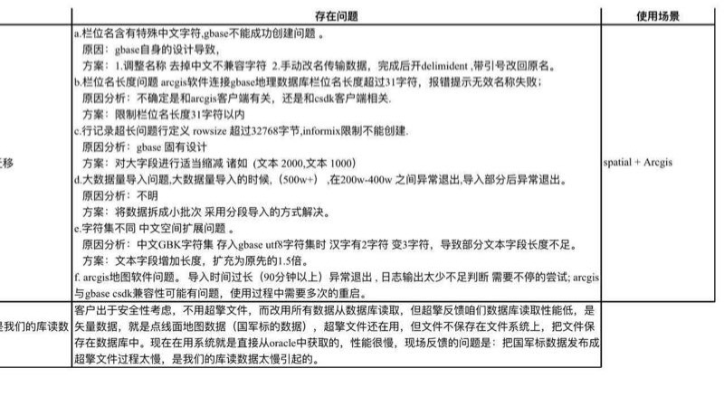
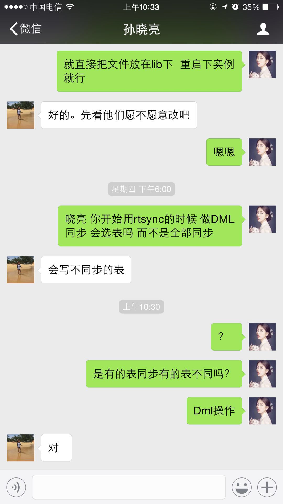
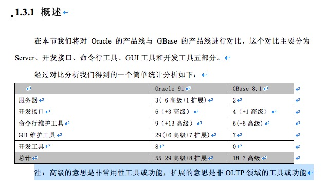

2018-02¶
2018-02-01¶
| 2018-02-01 07:20:57 | 你 | [链接] 李辉和Yunming的聊天记录 |
| 2018-02-01 07:21:26 | 你 | 你早上有空的话，帮我弄一下吧🙏🙏🙏🙏 |
| 2018-02-01 07:21:39 | 你 | 没空就等我上班自己弄 |
| 2018-02-01 07:21:40 | 我 | 嗯 |
| 2018-02-01 07:21:50 | 你 | 我刚起床 |
| 2018-02-01 07:21:53 | 你 | 刚看到 |
| 2018-02-01 08:55:27 | 我 | GIS.xlsx |
| 2018-02-01 08:59:55 | 我 | 对了，还有一件事 |
| 2018-02-01 09:00:09 | 我 | 今年公司裁员 |
| 2018-02-01 09:00:12 | 你 | 啥事 |
| 2018-02-01 09:00:24 | 我 | 先从辅助岗位开始 |
| 2018-02-01 09:00:53 | 我 | 王欣和严丹今年去售后了 |
| 2018-02-01 09:00:54 | 你 | ？ |
| 2018-02-01 09:01:03 | 你 | 嗯 |
| 2018-02-01 09:01:24 | 我 | 不设专门的项目管理了 |
| 2018-02-01 09:01:40 | 我 | 高杰这样的只能是模糊 |
| 2018-02-01 09:02:07 | 你 | 嗯 |
| 2018-02-01 09:02:39 | 我 | 培训部的人好多都转到文档了，不然就要被裁了 |
| 2018-02-01 09:06:08 | 你 | 呵呵 |
| 2018-02-01 09:06:12 | 你 | 裁员 |
| 2018-02-01 09:06:23 | 我 | 是 |
| 2018-02-01 09:06:43 | 我 | 理论上高杰也属于这个范围 |
| 2018-02-01 09:07:07 | 你 | 这都是谁跟你说的 |
| 2018-02-01 09:07:34 | 我 | 好多人，老陈 刘辉 王欣 |
| 2018-02-01 09:07:53 | 你 | 好么 |
| 2018-02-01 09:08:03 | 你 | 越来越严了 |
| 2018-02-01 09:32:29 | 我 | 明天你开车吗 |
| 2018-02-01 09:32:43 | 我 | 胖子不想开车了 |
| 2018-02-01 09:32:50 | 我 | 我坐老毛的车 |
| 2018-02-01 09:32:58 | 你 | 咦？ |
| 2018-02-01 09:33:04 | 你 | 他不开车么 |
| 2018-02-01 09:33:24 | 我 | 他不想，没最后定 |
| 2018-02-01 09:33:35 | 你 | 他跟你说的 |
| 2018-02-01 09:33:41 | 你 | 我说让他带我呢 |
| 2018-02-01 09:34:08 | 你 | 不行我自己开 |
| 2018-02-01 09:34:12 | 我 | 我想坐他的车，他告诉我不想开 |
| 2018-02-01 09:34:35 | 你 | 哦，都这么跟你说了，可能不开呗 |
| 2018-02-01 11:06:51 | 你 |  |
| 2018-02-01 11:36:09 | 你 | 看来高杰是不知道 王总才问了别人 |
| 2018-02-01 11:36:21 | 我 | 对 |
| 2018-02-01 11:36:46 | 我 | 现在这些信息我对高杰封锁，晨会上故意不说清楚 |
| 2018-02-01 11:37:01 | 你 | 嗯嗯 你做的太对了 |
| 2018-02-01 13:30:22 | 我 | 哈哈，高杰还不知道情况呢 |
| 2018-02-01 13:30:42 | 你 | 是 |
| 2018-02-01 13:33:56 | 我 | 老陈正在和王总讨论架构 |
| 2018-02-01 13:34:06 | 你 | 是吧 |
| 2018-02-01 13:34:10 | 你 | 老陈找你干啥 |
| 2018-02-01 13:34:21 | 我 | 缓存的事情 |
| 2018-02-01 13:34:32 | 我 | 他觉得张杰说的不靠谱 |
| 2018-02-01 13:34:42 | 我 | 后来又去问葛娜测试结果了 |
| 2018-02-01 13:35:14 | 你 | 哦 |
| 2018-02-01 13:35:49 | 你 | 说需求呢 |
| 2018-02-01 13:35:51 | 你 | 好像 |
| 2018-02-01 13:35:54 | 我 | 嗯嗯 |
| 2018-02-01 13:39:25 | 我 | 听不清说啥 |
| 2018-02-01 13:39:30 | 你 | 是 |
| 2018-02-01 13:39:46 | 你 | 听不清 |
| 2018-02-01 13:40:01 | 你 | 竖着耳朵 |
| 2018-02-01 13:40:08 | 我 | 是😁 |
| 2018-02-01 13:40:26 | 你 | 老陈知道咱们的流程吗 |
| 2018-02-01 13:40:32 | 你 | 知道用需 软需啥的吗 |
| 2018-02-01 13:40:34 | 我 | 我和他谈过 |
| 2018-02-01 13:40:39 | 我 | 应该知道 |
| 2018-02-01 13:40:41 | 你 | 他认可吗 |
| 2018-02-01 13:40:58 | 我 | 认可，老陈认为用需应该是行销部的事情 |
| 2018-02-01 13:41:03 | 我 | 软需是研发的事情 |
| 2018-02-01 13:41:08 | 你 | 是吧 |
| 2018-02-01 13:41:41 | 你 | 今天旭明说 他觉得我胆子特别大 |
| 2018-02-01 13:41:46 | 你 | 跟谁都敢怼 |
| 2018-02-01 13:41:51 | 我 | 哈哈 |
| 2018-02-01 13:41:59 | 我 | 那是他胆子太小 |
| 2018-02-01 13:42:05 | 你 | 哈哈 |
| 2018-02-01 13:42:17 | 我 | 肚子那么大，胆子那么小 |
| 2018-02-01 13:42:21 | 你 | 哈哈 |
| 2018-02-01 13:42:22 | 你 | 是 |
| 2018-02-01 13:43:26 | 你 | 你在偷听吗 |
| 2018-02-01 13:43:31 | 我 | 嗯嗯 |
| 2018-02-01 13:43:52 | 你 | 你知道吗 我发现个事情 |
| 2018-02-01 13:43:56 | 我 | ？ |
| 2018-02-01 13:44:09 | 你 | 我觉得王总在开会的时候总是不专注 |
| 2018-02-01 13:44:29 | 你 | 总是喜欢在开会的时候 处理微信、邮件中的事 |
| 2018-02-01 13:44:34 | 我 | 是 |
| 2018-02-01 13:44:42 | 你 | 他不是像你或者老杨那样 |
| 2018-02-01 13:44:56 | 你 | 你们也经常处理 但是是为了会议服务的 |
| 2018-02-01 13:45:00 | 你 | 他不是 |
| 2018-02-01 13:45:05 | 你 | 他是没原则的打断 |
| 2018-02-01 13:45:08 | 你 | 可搞笑了 |
| 2018-02-01 13:45:11 | 我 | 嗯嗯 |
| 2018-02-01 13:45:21 | 我 | 现在讨论研发分组呢 |
| 2018-02-01 13:45:33 | 我 | 我听见说张文跃了 |
| 2018-02-01 13:45:39 | 我 | 还有高宏达 |
| 2018-02-01 13:45:42 | 你 | 哈哈 |
| 2018-02-01 13:45:45 | 你 | 我也听听 |
| 2018-02-01 13:49:45 | 你 | 老陈说回头跟你商量了好像 |
| 2018-02-01 13:49:50 | 你 | 你听到了吗 |
| 2018-02-01 13:49:55 | 我 | 哦，我没听见 |
| 2018-02-01 13:56:58 | 我 | 这么快 |
| 2018-02-01 13:57:05 | 我 | 不像王总的风格 |
| 2018-02-01 13:57:12 | 你 | 是 |
| 2018-02-01 14:32:55 | 你 | 刘辉情绪好大啊 |
| 2018-02-01 14:35:14 | 我 | 是，就是让王欣给逼的 |
| 2018-02-01 15:31:14 | 我 | 干啥呢 |
| 2018-02-01 15:31:28 | 你 | 把魏忠萍那个表弄弄 |
| 2018-02-01 15:31:49 | 你 | 我老是想把他叫成魏忠贤 |
| 2018-02-01 15:31:55 | 我 | 😁 |
| 2018-02-01 15:56:06 | 你 | 怎么说 |
| 2018-02-01 15:56:07 | 我 | 和我谈架构了，我做研发 |
| 2018-02-01 15:56:21 | 你 | 那就好 |
| 2018-02-01 15:56:22 | 我 | 原来的三个组加上高达他们组 |
| 2018-02-01 15:56:31 | 我 | 一共四个组 |
| 2018-02-01 15:56:33 | 你 | 嗯嗯 不错 |
| 2018-02-01 15:56:37 | 你 | 那就没事了 |
| 2018-02-01 15:56:43 | 我 | 嗯嗯 |
| 2018-02-01 15:56:53 | 我 | 胖子做 L3，归老陈领导 |
| 2018-02-01 15:56:59 | 你 | 哈哈 |
| 2018-02-01 15:57:01 | 你 | 他适合 |
| 2018-02-01 15:57:06 | 我 | 对呀 |
| 2018-02-01 15:57:11 | 你 | 你负责N版本是吧 |
| 2018-02-01 15:57:15 | 我 | 对 |
| 2018-02-01 15:57:18 | 你 | 终于落地了 |
| 2018-02-01 15:57:27 | 你 | 不错不错 |
| 2018-02-01 15:57:58 | 我 | 你知道吗，王总特意把架构那张纸折起来，不让我看吕迅他们的分组 |
| 2018-02-01 15:58:05 | 你 | 这下我就不担心你了 |
| 2018-02-01 15:58:08 | 我 | 嗯嗯 |
| 2018-02-01 15:58:15 | 你 | 他们爱怎么分就怎么分呗 |
| 2018-02-01 15:58:17 | 你 | 无所谓啦 |
| 2018-02-01 15:58:37 | 我 | 其实我是想把梁辰弄过来的 |
| 2018-02-01 15:58:43 | 我 | 不过无所谓啦 |
| 2018-02-01 15:58:50 | 你 | 就是呗 |
| 2018-02-01 15:59:07 | 你 | 高宏达那个组都是谁啊 |
| 2018-02-01 15:59:14 | 我 | 都在对门 |
| 2018-02-01 15:59:22 | 我 | 除了高达我其他的也不认识 |
| 2018-02-01 15:59:31 | 你 | 胖子做L3的话 胖子那组是杨丽颖的主管么 |
| 2018-02-01 15:59:32 | 我 | 他们组只做安全版 |
| 2018-02-01 15:59:37 | 我 | 是 |
| 2018-02-01 15:59:42 | 你 | 嗯嗯 |
| 2018-02-01 15:59:51 | 你 | 张道山呢 |
| 2018-02-01 15:59:55 | 你 | 有他的位置么 |
| 2018-02-01 15:59:58 | 我 | 没看见 |
| 2018-02-01 16:00:04 | 你 | 那估计会去需求了 |
| 2018-02-01 16:00:07 | 我 | 王总折起来了 |
| 2018-02-01 16:00:22 | 你 | 折起来的不是吕讯那组么 |
| 2018-02-01 16:00:37 | 我 | 还有张道山和刘雪峰 |
| 2018-02-01 16:00:41 | 你 | 你就看到你自己的的了是吧 |
| 2018-02-01 16:00:42 | 你 | 嗯嗯 |
| 2018-02-01 16:00:47 | 我 | 嗯嗯 |
| 2018-02-01 16:00:49 | 你 | 没事 回头我跟老杨要下 |
| 2018-02-01 16:00:56 | 你 | 胖子那组除了他还有谁啊 |
| 2018-02-01 18:07:31 | 我 | 谁在王总屋里？ |
| 2018-02-01 18:07:37 | 你 | 张道山 |
| 2018-02-01 18:07:46 | 我 | 应该是需求的事情 |
| 2018-02-01 18:07:49 | 你 | 嗯嗯 |
| 2018-02-01 18:08:04 | 我 | 我太高兴了，你真的很厉害啦 |
| 2018-02-01 18:08:12 | 我 | 你都不用懂代码 |
| 2018-02-01 18:08:22 | 你 | 嘿嘿 |
| 2018-02-01 18:08:31 | 你 | 我想到了 第一时间想跟你说 |
| 2018-02-01 18:08:56 | 我 | 我在脑补你和张杰说的时候张杰的样子 |
| 2018-02-01 18:09:14 | 你 | 那是 他是深深的折服 |
| 2018-02-01 18:09:21 | 你 | 哈哈 |
| 2018-02-01 18:09:24 | 你 | 我也很开心呢 |
| 2018-02-01 18:09:37 | 我 | 赶紧给李杰炫耀一下吧 |
| 2018-02-01 18:09:48 | 你 | 跟她说啥 他也听不懂 |
| 2018-02-01 18:09:56 | 你 | 我只能跟你和张杰能炫耀的出去 |
| 2018-02-01 18:10:03 | 我 | 😁 |
2018-02-02¶
| 2018-02-02 13:03:16 | 你 | 吃饱了就想睡 |
| 2018-02-02 13:03:47 | 我 | 哈哈，回来了吗 |
| 2018-02-02 13:05:08 | 你 | 没呢 |
| 2018-02-02 13:05:39 | 我 | 嗯嗯 |
| 2018-02-02 13:56:27 | 你 | 
|
| 2018-02-02 13:56:32 | 你 | 呵呵，ora也不支持 |
| 2018-02-02 13:56:59 | 我 | 嗯嗯，那就没事了 |
| 2018-02-02 13:57:38 | 我 | 现在顿号不支持有点麻烦 |
| 2018-02-02 13:58:06 | 你 | 顿号不是支持呢 |
| 2018-02-02 13:58:20 | 我 | 有问题 |
| 2018-02-02 13:58:31 | 你 | 真晕 |
| 2018-02-02 13:58:36 | 我 | 让研发先看看吧 |
| 2018-02-02 13:58:40 | 你 | 啥问题 |
| 2018-02-02 13:58:49 | 我 | 加不加都一样 |
| 2018-02-02 13:59:00 | 你 | 嗯 |
| 2018-02-02 13:59:05 | 你 | 先看看 |
| 2018-02-02 15:11:57 | 我 | 看啥呢 |
| 2018-02-02 15:12:10 | 你 | 解读红楼梦 |
| 2018-02-02 15:12:21 | 我 | 嗯 |
| 2018-02-02 15:13:01 | 你 | [链接] 少读红楼回答了《红楼梦》里紫鹃对黛玉的好，都表现在哪些方面？(58赞)- 悟空问答 |
| 2018-02-02 15:26:11 | 你 | 困死了 |
| 2018-02-02 15:26:44 | 我 | 是，测试组讲的时候我就睡着了 |
| 2018-02-02 15:27:02 | 你 | 我看到了[偷笑][偷笑][偷笑] |
| 2018-02-02 15:27:25 | 我 | 啊[囧] |
| 2018-02-02 15:28:11 | 你 | 你没打呼噜，也没面目狰狞 |
| 2018-02-02 15:28:31 | 我 | 还好还好[尴尬] |
| 2018-02-02 16:11:58 | 我 | 今天老陈和我说，8a的人可能不来了，N+1版可能没有了 |
| 2018-02-02 16:12:21 | 你 | 啊，那天王总也说了 |
| 2018-02-02 16:12:44 | 你 | 那研发的规划应该会变吧 |
| 2018-02-02 16:12:46 | 我 | 还有就是需求组是张道山管，不过还没有和赵总商量 |
| 2018-02-02 16:12:53 | 我 | 变化很大 |
| 2018-02-02 16:13:05 | 你 | 那他跟杨总汇报吗？ |
| 2018-02-02 16:13:16 | 我 | 不是，王总 |
| 2018-02-02 16:13:32 | 你 | 那杨总不带了是吧 |
| 2018-02-02 16:13:55 | 我 | 张道山说王总带他就管，老杨带他就不管 |
| 2018-02-02 16:14:10 | 你 | 昨天耿燕跟我说，杨总特别着急，等着确定需求的事呢 |
| 2018-02-02 16:14:24 | 我 | 现在赵总还没有定呢 |
| 2018-02-02 16:14:38 | 你 | 这事估计还得谈 |
| 2018-02-02 16:14:41 | 我 | 还没到最后呢 |
| 2018-02-02 16:14:44 | 我 | 嗯嗯 |
| 2018-02-02 16:15:12 | 你 | 我非常确定赵总已经跟杨总说让他带了 |
| 2018-02-02 16:15:27 | 我 | 嗯嗯 |
| 2018-02-02 16:15:31 | 你 | 现在赵总和杨总都在等王总 |
| 2018-02-02 16:15:49 | 你 | 去聊需求的事 |
| 2018-02-02 16:16:13 | 我 | 估计怎么也得周一了 |
| 2018-02-02 16:16:19 | 你 | 是 |
| 2018-02-02 16:16:25 | 我 | 老陈说下周就该公布了 |
| 2018-02-02 16:16:34 | 你 | 昨天燕姐说老杨都急死了 |
| 2018-02-02 16:16:51 | 你 | 王总也不找他 |
| 2018-02-02 16:17:25 | 我 | 我估计最后还是老杨管 |
| 2018-02-02 16:17:39 | 我 | 我觉得赵总管需求的决心很大 |
| 2018-02-02 16:17:43 | 你 | 再看看 |
| 2018-02-02 16:17:58 | 我 | 嗯 |
| 2018-02-02 16:20:58 | 你 | 8a不来的话，研发这边会有啥变化？ |
| 2018-02-02 16:21:27 | 我 | 最大的变化就是不变化 |
| 2018-02-02 16:21:35 | 你 | 还按照n和n+1的思路吗 |
| 2018-02-02 16:22:06 | 我 | 除了接口组归我管以外，dsd的研发还是他们自己管 |
| 2018-02-02 16:22:18 | 我 | 分成两个研发部 |
| 2018-02-02 16:22:35 | 我 | 我一个吕迅一个 |
| 2018-02-02 16:22:56 | 你 | 那没啥变化啊 |
| 2018-02-02 16:23:01 | 我 | 对 |
| 2018-02-02 16:23:11 | 你 | 那活呢 |
| 2018-02-02 16:23:29 | 我 | 原来说8a来人，dsd的人我来管 |
| 2018-02-02 16:23:34 | 你 | 还是你负责n版本吗？ |
| 2018-02-02 16:23:40 | 我 | 也和原来一样 |
| 2018-02-02 16:23:42 | 我 | 是 |
| 2018-02-02 16:24:19 | 你 | 原来不是吕讯的组和8a一起做n么 |
| 2018-02-02 16:24:32 | 你 | Dsd的不就高达一组给你了 |
| 2018-02-02 16:24:36 | 我 | 是 |
| 2018-02-02 16:24:37 | 你 | 别人没给吧 |
| 2018-02-02 16:24:58 | 我 | 今天老陈说还要问问高达 |
| 2018-02-02 16:25:47 | 我 | 老陈他们想做一些N+1的东西 |
| 2018-02-02 16:26:00 | 你 | 嗯 |
| 2018-02-02 16:26:39 | 你 | 那他们都去做n+1，n版本人肯定不够 |
| 2018-02-02 16:26:54 | 你 | 那得看他们做什么了 |
| 2018-02-02 16:26:57 | 我 | 不够就让他们来呗 |
| 2018-02-02 16:27:08 | 我 | 反正都是老陈的 |
| 2018-02-02 16:27:14 | 你 | 那到时候还不推来推去的 |
| 2018-02-02 16:27:19 | 我 | 现场出问题也是老陈的事情 |
| 2018-02-02 16:27:25 | 你 | 你跟吕讯就会有冲突 |
| 2018-02-02 16:27:34 | 我 | 我不会去找吕迅 |
| 2018-02-02 16:27:42 | 我 | 我去找老陈 |
| 2018-02-02 16:28:18 | 你 | 嗯 |
| 2018-02-02 16:28:25 | 你 | 问题也不大 |
| 2018-02-02 16:28:32 | 我 | 对我的影响最大的就是这些人不归我管 |
| 2018-02-02 16:28:38 | 我 | 其他没啥问题 |
| 2018-02-02 16:28:50 | 你 | [链接] 李辉和杨伟伟的聊天记录 |
| 2018-02-02 16:28:54 | 我 | 人多也不一定是好事 |
| 2018-02-02 16:29:28 | 我 | 嗯嗯 |
| 2018-02-02 16:29:57 | 你 | 那你是希望吕讯那组也归你管？ |
| 2018-02-02 16:30:17 | 我 | 我无所谓 |
| 2018-02-02 16:30:47 | 我 | 当时和老陈商量的不能把人给8a的 |
| 2018-02-02 16:31:09 | 我 | 所以就让吕迅过去，剩下的我管 |
| 2018-02-02 16:31:45 | 我 | 现在8a不过来了，他的人还是他管吧 |
| 2018-02-02 16:32:04 | 我 | 而且这样我就可以把安全推出去 |
| 2018-02-02 16:33:06 | 你 | 哦 |
| 2018-02-02 16:33:14 | 你 | 是这样啊 |
| 2018-02-02 16:33:17 | 你 | 我不知道 |
| 2018-02-02 21:05:33 | 你 | |
| 2018-02-02 21:05:44 | 你 | |
| 2018-02-02 21:06:04 | 你 | |
| 2018-02-02 21:06:14 | 你 | |
| 2018-02-02 21:06:25 | 你 | |
| 2018-02-02 21:06:34 | 你 | |
| 2018-02-02 21:06:45 | 你 | |
| 2018-02-02 21:06:57 | 你 | |
| 2018-02-02 21:07:06 | 你 | |
| 2018-02-02 21:07:22 | 你 | |
| 2018-02-02 21:08:58 | 我 | 嗯嗯，我也快到了 |
| 2018-02-02 21:09:15 | 我 | 我看出你不高兴了 |
| 2018-02-02 21:09:34 | 我 | 就是不知道为啥 |
| 2018-02-02 21:09:47 | 我 | 我知道你是为了我才开车的 |
| 2018-02-02 21:10:13 | 你 | 那肯定的啊 |
| 2018-02-02 21:10:45 | 我 | 那天你说拉我我可高兴了 |
| 2018-02-02 21:11:03 | 我 | 赶紧把老毛退掉了[呲牙] |
| 2018-02-02 21:11:28 | 我 | 赶紧回家吧，外面挺冷的 |
| 2018-02-02 21:11:39 | 你 | |
| 2018-02-02 21:11:45 | 你 | |
| 2018-02-02 21:12:11 | 你 | |
| 2018-02-02 21:12:20 | 你 | |
| 2018-02-02 21:12:24 | 我 | 嗯嗯 |
| 2018-02-02 21:12:37 | 你 | |
| 2018-02-02 21:12:48 | 你 | |
| 2018-02-02 21:12:56 | 你 | |
| 2018-02-02 21:13:01 | 你 |
2018-02-05¶
| 2018-02-05 09:58:16 | 我 | 你梳了一个小辫子 |
| 2018-02-05 09:58:22 | 你 | 恩 |
| 2018-02-05 09:58:23 | 你 | 是 |
| 2018-02-05 10:48:33 | 你 |  |
| 2018-02-05 10:49:37 | 我 | 这下麻烦了，DCC同步所有表 |
| 2018-02-05 10:50:00 | 你 | [链接] 李辉和孙晓亮的聊天记录 |
| 2018-02-05 10:52:48 | 我 | 😄，晓亮还不知道呢 |
| 2018-02-05 13:16:59 | 我 | 看了晓亮的邮件了吗 |
| 2018-02-05 13:18:22 | 你 | 刚看完了 |
| 2018-02-05 13:18:24 | 你 | 怎么了 |
| 2018-02-05 13:18:30 | 我 | 王总回了 |
| 2018-02-05 13:18:36 | 你 | 嗯嗯 |
| 2018-02-05 13:18:43 | 我 | 不知道晓亮为啥要发这个邮件 |
| 2018-02-05 13:19:16 | 你 | 早上周会不是王总让我找李俊旗么 |
| 2018-02-05 13:19:23 | 你 | 我没找 直接找得李志刚 |
| 2018-02-05 13:19:31 | 你 | 李志刚找得晓亮和俊旗 |
| 2018-02-05 13:19:47 | 我 | 哦 |
| 2018-02-05 13:19:48 | 你 | [链接] 刚 到一分钟和李辉的聊天记录 |
| 2018-02-05 13:20:11 | 你 | 没事吧 |
| 2018-02-05 13:20:26 | 我 | 没事 |
| 2018-02-05 13:20:50 | 我 | 最近大崔一直盯着咱们呢 |
| 2018-02-05 13:21:01 | 我 | 我还以为又是大崔说的 |
| 2018-02-05 13:21:11 | 你 | 哦 不是 |
| 2018-02-05 13:22:03 | 你 | 李志刚让整理版本的那个邮件 你回还是我回啊 |
| 2018-02-05 13:22:10 | 你 | 其实他根本不应该找我 |
| 2018-02-05 13:22:43 | 我 | 那个邮件我没收到 |
| 2018-02-05 13:22:50 | 我 | 你就回了吧 |
| 2018-02-05 13:22:57 | 我 | 未来你就是产品经理了 |
| 2018-02-05 13:23:09 | 你 | 那个邮件说的就是他在群里说的 |
| 2018-02-05 13:23:13 | 你 | 别的什么都没有 |
| 2018-02-05 13:23:36 | 我 | 我看他不是说要写一个列表吗 |
| 2018-02-05 13:24:15 | 你 | 这个东西要是从你这出 你可以找刘畅做 要是从我这出 我自己做 |
| 2018-02-05 13:24:17 | 你 | 你看吧 |
| 2018-02-05 13:25:47 | 我 | 你别做了，刘畅那里应该都有，我给你要一下吧 |
| 2018-02-05 13:26:51 | 你 | 那你反馈给李志刚吧 他最近老给我找事 |
| 2018-02-05 13:27:01 | 我 | ？ |
| 2018-02-05 13:27:20 | 你 | 怎么了 |
| 2018-02-05 13:27:35 | 我 | 我是想问你怎么了 |
| 2018-02-05 13:27:45 | 我 | 感觉你有点不对劲 |
| 2018-02-05 13:27:49 | 你 | 我没怎么啊[惊讶] |
| 2018-02-05 13:27:52 | 你 | 没有吧 |
| 2018-02-05 13:28:11 | 我 | 好吧 |
| 2018-02-05 13:28:46 | 你 | 你收下邮件 这个是他给列的模板 |
| 2018-02-05 13:43:33 | 我 | 你今天咋了，感觉你不高兴 |
| 2018-02-05 13:58:43 | 我 | 你是生我气了吗 |
| 2018-02-05 13:59:16 | 你 | 没有 我生我自己的气呢 |
| 2018-02-05 13:59:25 | 你 | 你只需要别搭理我就行 |
| 2018-02-05 13:59:27 | 我 | 啊，为啥呀 |
| 2018-02-05 13:59:39 | 你 | 我不想跟你说 |
| 2018-02-05 13:59:50 | 我 | 唉，好吧 |
| 2018-02-05 14:35:38 | 你 | 今早上王总说国网要约销售讨论 |
| 2018-02-05 14:35:48 | 你 | 这个我觉得我们先有个计划最好 |
| 2018-02-05 14:36:02 | 你 | 否则销售的狮子大开口 咱们hold不住啊 |
| 2018-02-05 14:36:03 | 我 | 是的 |
| 2018-02-05 14:36:09 | 你 | 这个不就是版本规划么 |
| 2018-02-05 14:36:24 | 你 | G7中包括的条目 从来没跟一线沟通过 |
| 2018-02-05 14:36:29 | 你 | 都是我们内部做的 |
| 2018-02-05 14:36:38 | 你 | 我觉得他们也没谱 |
| 2018-02-05 14:36:57 | 你 | 这事要是我们自己做了 更有主动性 |
| 2018-02-05 14:37:00 | 我 | 嗯嗯 |
| 2018-02-05 14:37:10 | 你 | 我看了下那个表 都是些不着急的任务 |
| 2018-02-05 14:37:14 | 你 | 没什么着急的 |
| 2018-02-05 14:37:24 | 你 | 让他们拍 不知道会是什么结果 |
| 2018-02-05 14:37:28 | 我 | 你现在是不是就缺技术的评估时间 |
| 2018-02-05 14:37:31 | 你 | 最好是我们先有个方案 |
| 2018-02-05 14:37:35 | 我 | 嗯 |
| 2018-02-05 14:37:46 | 你 | 有的有 有的没有 |
| 2018-02-05 14:38:01 | 你 | 我早上跟王总说的时候 没想过要跟销售的说 |
| 2018-02-05 14:38:10 | 你 | 我只是想问他315那个怎么推进 |
| 2018-02-05 14:38:23 | 你 | 本来G7就定了做314和316了 |
| 2018-02-05 14:38:25 | 我 | 这样，你自己先大概排一个时间吧 |
| 2018-02-05 14:38:49 | 我 | 当初28s 的时候研发也没有评估，我就拍的3到4个月 |
| 2018-02-05 14:39:00 | 我 | 没想到晓亮就答应了 |
| 2018-02-05 14:39:07 | 你 | 我的意思是 我们就按照2个月发一个版 |
| 2018-02-05 14:39:14 | 你 | 找2个月的活就行了 |
| 2018-02-05 14:39:24 | 我 | 可以 |
| 2018-02-05 14:39:29 | 你 | 要是有特殊情况 就延长或者缩短 |
| 2018-02-05 14:39:36 | 我 | 嗯嗯 |
| 2018-02-05 14:40:07 | 你 | 这样我们就有节奏了 |
| 2018-02-05 14:40:33 | 你 | 否则总是时短时长的 |
| 2018-02-05 14:40:48 | 我 | 嗯嗯，你说的没错 |
| 2018-02-05 14:41:25 | 你 | 从现在看 大的需求也做不了 |
| 2018-02-05 14:41:31 | 你 | 2个月差不多 |
| 2018-02-05 14:41:38 | 你 | 需求2条左右 |
| 2018-02-05 14:41:41 | 我 | 嗯嗯 |
| 2018-02-05 14:41:42 | 你 | 多的话3条 |
| 2018-02-05 14:41:55 | 你 | 而且国网这个节奏 不是你说的么 |
| 2018-02-05 14:42:16 | 你 | 这样技术也知道 3月底出了版本 5月底也会有版本 7月底还会有 |
| 2018-02-05 14:42:23 | 你 | 久了就知道了 |
| 2018-02-05 14:42:24 | 我 | 嗯嗯 |
| 2018-02-05 14:42:28 | 我 | 可以 |
| 2018-02-05 14:42:42 | 我 | 另外你开会的时候也问问销售的计划 |
| 2018-02-05 14:42:50 | 你 | 
|
| 2018-02-05 14:42:52 | 我 | 看看他们今年有几个时间节点 |
| 2018-02-05 14:42:58 | 你 | 这个是刚才王总回复的 |
| 2018-02-05 14:43:04 | 你 | 销售说话根本不靠谱 |
| 2018-02-05 14:43:15 | 你 | 他们也没啥想法 |
| 2018-02-05 14:43:32 | 我 | 我知道，但是他们应该有投标之类的时间点 |
| 2018-02-05 14:43:45 | 我 | 我就是担心他们最后又是临时提 |
| 2018-02-05 14:43:50 | 你 | 哦 |
| 2018-02-05 14:43:58 | 你 | 好吧 |
| 2018-02-05 14:44:12 | 我 | 你看28s 销售回复的邮件 |
| 2018-02-05 14:44:20 | 我 | 还有赵益那个项目 |
| 2018-02-05 14:44:30 | 我 | 其实都是怪研发 |
| 2018-02-05 14:44:40 | 你 | 怪研发是肯定的 |
| 2018-02-05 14:44:43 | 你 | 问了也怪 |
| 2018-02-05 14:44:51 | 你 | 我的意思是 现在L2体系也建立了 |
| 2018-02-05 14:44:57 | 你 | 我们最好别跟销售的问了 |
| 2018-02-05 14:45:11 | 你 | 28s的那些个时间节点 反正我不知道 |
| 2018-02-05 14:45:13 | 你 | 你知道吗 |
| 2018-02-05 14:45:16 | 我 | 我知道你的意思 |
| 2018-02-05 14:45:33 | 你 | 到时候还能说我们不知道项目情况 或者我们推李志刚作为 |
| 2018-02-05 14:45:41 | 你 | 而不是我们问销售 |
| 2018-02-05 14:45:47 | 你 | 既然有流程了 |
| 2018-02-05 14:45:51 | 你 | 还有这个会就很奇怪 |
| 2018-02-05 14:45:56 | 我 | 是 |
| 2018-02-05 14:45:58 | 你 | 就不该有这会 |
| 2018-02-05 14:46:03 | 我 | 是 |
| 2018-02-05 14:46:11 | 你 | 没见过哪个研发的做版本计划 问销售的 |
| 2018-02-05 14:46:38 | 你 | 我也不知道 你看吧 |
| 2018-02-05 14:46:48 | 我 | 那就别问了 |
| 2018-02-05 14:47:04 | 你 | 我懒得跟王总开会 也懒得管这些事 |
| 2018-02-05 14:47:16 | 我 | 嗯嗯，我知道 |
| 2018-02-05 15:19:24 | 你 | 刘畅发的这表好多错误 |
| 2018-02-05 15:19:58 | 我 | 啊，太不靠谱了 |
| 2018-02-05 15:40:33 | 你 | 8t版本信息统计表.xlsx |
| 2018-02-05 15:46:07 | 我 | 没有问题 |
| 2018-02-05 15:46:29 | 你 | 你发还是我发？ |
| 2018-02-05 15:46:37 | 我 | 你发吧 |
| 2018-02-05 16:50:10 | 你 | [链接] 李辉和Yunming的聊天记录 |
| 2018-02-05 16:51:44 | 我 | 嗯嗯，挺好 |
| 2018-02-05 16:52:33 | 你 | 这件事我准备找下王欣 |
| 2018-02-05 16:52:46 | 你 | 你说合适不 |
| 2018-02-05 16:53:12 | 你 | 要是L2的流程也把这个规定了 版本规划我们就不用做了 |
| 2018-02-05 16:53:17 | 你 | 让L2的帮着做 |
| 2018-02-05 16:53:22 | 我 | 可以 |
| 2018-02-05 16:53:34 | 你 | 最好是推给他们 |
| 2018-02-05 16:53:39 | 你 | 我们多省心 |
| 2018-02-05 16:53:47 | 我 | 嗯嗯 |
| 2018-02-05 16:53:59 | 你 | 理由就是项目对哪个需求的迫切度高 研发的也不知道 |
| 2018-02-05 16:55:10 | 我 | 嗯 |
| 2018-02-05 16:55:56 | 你 | 以前开发中心都是怎么弄的 |
| 2018-02-05 16:56:34 | 我 | 都是洪越弄的 |
| 2018-02-05 16:57:27 | 你 | 洪越哪弄过这个啊 |
| 2018-02-05 16:57:58 | 我 | 老杨让他整理过 |
| 2018-02-05 16:58:42 | 我 | |
| 2018-02-05 16:59:01 | 我 | 没有高达了 |
| 2018-02-05 16:59:07 | 你 | 哦 |
| 2018-02-05 16:59:39 | 你 | 接口组让张杰带 太可惜了 |
| 2018-02-05 16:59:46 | 你 | 我说的是张杰可惜 |
| 2018-02-05 16:59:56 | 我 | 没有呀，他还是我的副手呢 |
| 2018-02-05 17:00:04 | 我 | 怎么会浪费了他 |
| 2018-02-05 17:00:10 | 你 | 哦 |
| 2018-02-05 17:00:12 | 你 | 那就好 |
| 2018-02-05 17:00:49 | 你 | 李培盛呢 |
| 2018-02-05 17:01:29 | 我 | 黄鑫忘了，我告诉他了 |
| 2018-02-05 17:02:01 | 你 | 我们组啥情况 |
| 2018-02-05 17:02:10 | 你 | 黄鑫是跟老陈汇报是吧 |
| 2018-02-05 17:02:20 | 我 | 对 |
| 2018-02-05 17:02:39 | 你 | 呵呵 这是架构了高杰和王总了 |
| 2018-02-05 17:02:55 | 我 | 是 |
| 2018-02-05 17:03:08 | 你 | 我们组有消息吗 |
| 2018-02-05 17:03:18 | 我 | 没有 |
| 2018-02-05 17:03:24 | 我 | 现在应该还是张道山 |
| 2018-02-05 17:03:38 | 我 | 不过赵总出差，等回来没准还有变化 |
| 2018-02-05 17:03:43 | 你 | 哦 |
| 2018-02-05 17:03:49 | 你 | 再等等吧 |
| 2018-02-05 17:03:52 | 你 | 张工也不错 |
| 2018-02-05 17:42:37 | 我 | 亲，如果这事你不想管，那就这样 |
| 2018-02-05 17:43:03 | 我 | 但是我想的是你出面来做这件事，对你未来的成长有好处 |
| 2018-02-05 17:43:32 | 你 | 知道了 |
| 2018-02-05 17:43:41 | 我 | 这样以后这些事情你就可以名正言顺的做了 |
| 2018-02-05 17:44:51 | 我 | 你现在不要纠结你该不该发，你发了以后这些事情就是你负责定了 |
| 2018-02-05 17:45:02 | 我 | 以后需求和发版就是你说了算了 |
| 2018-02-05 17:45:44 | 你 | 知道了 |
| 2018-02-05 17:46:09 | 你 | 没正式合并之前 我还得干我该干的活 还得跟你汇报不是 |
| 2018-02-05 17:46:26 | 我 | 嗯嗯，但是我授权你去做这些呀 |
| 2018-02-05 17:46:36 | 我 | 你怎么做都没事，我给你兜底 |
| 2018-02-05 17:46:39 | 你 | 那你得授权啊 |
| 2018-02-05 17:46:42 | 你 | 否则我怎么做 |
| 2018-02-05 17:46:54 | 我 | 哈哈，明天晨会我给你授权 |
| 2018-02-05 17:47:10 | 你 | 你根本不懂我在说什么 |
| 2018-02-05 17:47:22 | 我 | 哦 |
| 2018-02-05 17:51:39 | 我 | 你现在纠结的是什么呢？ |
| 2018-02-05 17:52:44 | 你 | 我不知道怎么跟你说 只是最近发生的这些事 让我对你有了新的看法 |
| 2018-02-05 17:52:58 | 你 | 我也在想 我想的究竟对不对 |
| 2018-02-05 17:53:05 | 我 | 哦 |
| 2018-02-05 17:53:25 | 我 | 什么样的新看法？ |
| 2018-02-05 17:53:42 | 你 | 反正不怎么好 |
| 2018-02-05 17:53:49 | 我 | 嗯嗯 |
| 2018-02-05 17:54:06 | 你 | 我还没想好 所以也没跟你说 或者是 我不想个你说 |
| 2018-02-05 17:54:13 | 你 | 我觉得后者居多 |
| 2018-02-05 17:54:17 | 我 | 嗯嗯 |
| 2018-02-05 17:54:22 | 我 | 那就是和我赌气呢 |
| 2018-02-05 17:54:26 | 你 | 呵呵 |
| 2018-02-05 17:57:19 | 我 | 亲，周五下班你还没有补签呢 |
| 2018-02-05 17:57:54 | 你 | 哦 |
| 2018-02-05 18:41:34 | 你 | 我跟王总说一下去 |
| 2018-02-05 18:41:41 | 我 | 嗯嗯 |
2018-02-06¶
| 2018-02-06 09:03:53 | 我 | 王志这是胡说八道 |
| 2018-02-06 09:05:11 | 你 | 就是，怎么可能是这个样子呢 |
| 2018-02-06 09:05:38 | 你 | 真想追死他 |
| 2018-02-06 09:05:47 | 你 | 懒得跟他矫情 |
| 2018-02-06 09:06:13 | 我 | 是，我也懒得理他 |
| 2018-02-06 09:13:04 | 我 | 又开始瞎掰了 |
| 2018-02-06 09:13:14 | 你 | 😄 |
| 2018-02-06 10:05:12 | 我 | 你们去哪了？是 N+1的事情吗 |
| 2018-02-06 10:10:06 | 你 | 做ora的 |
| 2018-02-06 10:10:16 | 我 | 嗯嗯 |
| 2018-02-06 10:10:40 | 你 | 说需求组张道山是组长，我是副组长 |
| 2018-02-06 10:10:50 | 你 | 需求组出了做需求的就是文档 |
| 2018-02-06 10:10:54 | 你 | 也在这边 |
| 2018-02-06 10:10:55 | 我 | 哈哈，太棒了 |
| 2018-02-06 10:11:04 | 你 | 让我带着这群人一起做ora |
| 2018-02-06 10:11:10 | 我 | 然后你再跟着王欣 |
| 2018-02-06 10:11:19 | 我 | 基本上就是独立了 |
| 2018-02-06 10:11:48 | 我 | 你终于有手下了😄 |
| 2018-02-06 10:12:03 | 你 | 我都不知道怎么干啊，也没带过人 |
| 2018-02-06 10:12:13 | 我 | 没事的，有我呢 |
| 2018-02-06 10:12:22 | 我 | 慢慢来，总是有第一次的 |
| 2018-02-06 10:46:55 | 你 | 一会 我把他们多训老实了 |
| 2018-02-06 10:47:03 | 我 | 嗯嗯 |
| 2018-02-06 10:50:14 | 你 | 让他们连606-5G吗 |
| 2018-02-06 10:50:20 | 你 | 连607吧要不 |
| 2018-02-06 10:50:27 | 我 | 606 |
| 2018-02-06 10:50:28 | 你 | 607密码是啥 |
| 2018-02-06 10:50:33 | 我 | 密码一样 |
| 2018-02-06 10:50:37 | 我 | 607人太多 |
| 2018-02-06 10:50:47 | 我 | 没事的，就606吧 |
| 2018-02-06 10:50:48 | 你 | 带5G |
| 2018-02-06 10:50:52 | 你 | 吗 |
| 2018-02-06 10:50:57 | 我 | 两个一样 |
| 2018-02-06 10:51:03 | 我 | 都是一个路由器 |
| 2018-02-06 13:52:03 | 你 | 述职报告有人看吗 |
| 2018-02-06 13:52:06 | 你 | 那多不好意思 |
| 2018-02-06 13:52:17 | 你 | 哦哦 |
| 2018-02-06 13:52:29 | 你 | 你听见我刚才说的话了吧 |
| 2018-02-06 13:52:33 | 我 | 听见了 |
| 2018-02-06 13:52:34 | 你 | 你觉得行吗 |
| 2018-02-06 13:52:41 | 我 | 可以，没有问题 |
| 2018-02-06 13:52:48 | 我 | 就是要有这种气势 |
| 2018-02-06 13:52:50 | 你 | 那就好 |
| 2018-02-06 13:53:07 | 我 | 特别是马姐那种人，没准就会给你捣乱 |
| 2018-02-06 13:53:18 | 你 | 就是 |
| 2018-02-06 13:53:23 | 你 | 马姐这个人必须压住他 |
| 2018-02-06 13:53:30 | 你 | 否则她就得翻天 |
| 2018-02-06 13:53:32 | 我 | 嗯嗯 |
| 2018-02-06 13:58:48 | 我 | 希望能有机会培养新人，扩充需求组人员，进一步提高自己对需求的理解和领导力 这句话太难改了 |
| 2018-02-06 13:59:04 | 你 | 哈哈 多谢你啦 |
| 2018-02-06 13:59:07 | 我 | 没法和你面对面交流太难受了 |
| 2018-02-06 14:00:52 | 你 | 你可以叫我 |
| 2018-02-06 14:00:54 | 你 | 没关系的 |
| 2018-02-06 14:01:00 | 你 | 还显得我事多 |
| 2018-02-06 14:01:06 | 你 | 我再看PL/SQL |
| 2018-02-06 14:01:08 | 我 | 嗯嗯 |
| 2018-02-06 14:01:21 | 你 | 按照他们这速度 一会做PL/SQL我得给他们派活 |
| 2018-02-06 15:23:38 | 我 | 你那进展怎么样 |
| 2018-02-06 15:23:55 | 你 | 进展很顺利 |
| 2018-02-06 15:23:57 | 你 | 我觉得还行 |
| 2018-02-06 15:24:07 | 我 | 嗯嗯，那就好 |
| 2018-02-06 15:24:34 | 我 | 老陈说鹿鸣想做PLSQL |
| 2018-02-06 15:24:43 | 你 | o o |
| 2018-02-06 15:24:48 | 我 | 所以王欣想先要这个 |
| 2018-02-06 15:24:49 | 你 | 那挺好的啊 |
| 2018-02-06 15:25:31 | 你 | 哦 |
| 2018-02-06 15:25:36 | 你 | 原来如此 |
| 2018-02-06 15:26:07 | 我 | 好好做吧，这次机会实在是太好了 |
| 2018-02-06 15:26:15 | 你 | enen |
| 2018-02-06 15:26:18 | 你 | 我知道 |
| 2018-02-06 15:26:22 | 我 | 你的命确实太好了 |
| 2018-02-06 15:26:28 | 你 | 哈哈 |
| 2018-02-06 15:26:29 | 你 | 唉 |
| 2018-02-06 15:26:34 | 你 | 贾工正好请假 |
| 2018-02-06 15:26:40 | 你 | 本来也是赵总安排给他的 |
| 2018-02-06 15:26:41 | 我 | 有人请假就对你有利 |
| 2018-02-06 15:43:46 | 你 | 哈哈 我就是个捡漏的 |
| 2018-02-06 15:44:11 | 我 | 关键还都是你有准备的 |
| 2018-02-06 15:44:27 | 我 | 只能说这就是命了 |
| 2018-02-06 16:05:22 | 你 | 你跟老陈都聊啥了 |
| 2018-02-06 16:05:42 | 我 | 我就是他的口风，上午他们去给武总汇报了 |
| 2018-02-06 16:05:57 | 你 | 啥叫口风 |
| 2018-02-06 16:06:03 | 你 | 出气筒？ |
| 2018-02-06 16:06:04 | 我 | 探口风 |
| 2018-02-06 16:06:14 | 你 | 你俩不是交换么 |
| 2018-02-06 16:06:25 | 我 | 两件事，一件是8t MPP 今年我们不管了，明年再说 |
| 2018-02-06 16:06:45 | 我 | 另一件就是 PL/SQL 鹿明想做 |
| 2018-02-06 16:06:57 | 我 | 其他的没有什么特别的了 |
| 2018-02-06 16:07:25 | 我 | 需求组这事老陈不在意，就让张道山管 |
| 2018-02-06 16:07:40 | 我 | 今天中午严丹和我说一个消息 |
| 2018-02-06 16:07:46 | 你 | 说啥了 |
| 2018-02-06 16:08:01 | 我 | 说赵总在群里发的，武总让赵总和王总去 PICC 给人家道歉 |
| 2018-02-06 16:08:26 | 我 | 好像要争取复测的机会 |
| 2018-02-06 16:08:37 | 你 | 哈哈 |
| 2018-02-06 16:09:03 | 我 | 还有一个，老陈说武总表态了，公司要考虑是做一个传统的数据库公司还是一个大数据公司 |
| 2018-02-06 16:09:22 | 我 | 武总说宁可8t 死了，也不想8a 死了 |
| 2018-02-06 16:09:35 | 你 | 武总肯定是这个态度 |
| 2018-02-06 16:10:03 | 我 | 我觉得这对咱们来说是一个利好 |
| 2018-02-06 16:10:07 | 我 | 特别是对你 |
| 2018-02-06 16:10:25 | 你 | 什么意思 |
| 2018-02-06 16:10:30 | 我 | 武总的态度这么明显，那么赵总就会有压力了 |
| 2018-02-06 16:11:02 | 我 | 那么就会逼着赵总不得不用他不是很信任的人 |
| 2018-02-06 16:11:14 | 我 | 像你这样的就会有机会了 |
| 2018-02-06 16:11:42 | 你 | 哎呀 |
| 2018-02-06 16:11:46 | 你 | 那是 |
| 2018-02-06 16:11:48 | 我 | 像这次，如果做好了。以后再有类似的事情就还会想到你 |
| 2018-02-06 16:11:55 | 你 | PICC不是赵总的项目么 |
| 2018-02-06 16:11:58 | 你 | 我没记错的话 |
| 2018-02-06 16:12:03 | 我 | PICC 是武总的 |
| 2018-02-06 16:12:04 | 你 | 不是武总说不让做 |
| 2018-02-06 16:12:10 | 你 | 那我记混了 |
| 2018-02-06 16:12:17 | 我 | 这就是武总给赵总小鞋穿 |
| 2018-02-06 16:12:18 | 你 | 说PICC是什么残羹冷炙的 |
| 2018-02-06 16:12:30 | 我 | 是赵总不想做 |
| 2018-02-06 16:13:02 | 你 | 恩 知道了 |
| 2018-02-06 16:13:57 | 我 | 像你这样的新人总比我这种更容易受到赵总的信任 |
| 2018-02-06 16:14:05 | 你 | 是 |
| 2018-02-06 16:14:08 | 你 | 这个确实是 |
| 2018-02-06 16:15:27 | 我 | 还有就是我说你命好，还有一个原因。现在需求组我和老杨都不管，对你来说反而是前面没人遮挡你了 |
| 2018-02-06 16:15:39 | 你 | 是 |
| 2018-02-06 16:15:44 | 我 | 虽然这样的风险很高，但是高风险高回报 |
| 2018-02-06 16:15:48 | 你 | 张道山的话 我觉得是最好的 |
| 2018-02-06 16:15:55 | 我 | 今天这个任务就很典型 |
| 2018-02-06 16:15:58 | 你 | 是 |
| 2018-02-06 16:16:36 | 我 | 以后没准赵总就给王欣安排，王欣就来找你 |
| 2018-02-06 16:17:14 | 你 | 非常有可能 |
| 2018-02-06 16:25:03 | 我 | 8ts_N+1版_会议纪要_20180206_陈文亭.docx |
| 2018-02-06 16:27:16 | 你 | 哇塞这个他都给你了 |
| 2018-02-06 16:27:49 | 我 | 嗯嗯，这就是老陈和王总的不同。老陈这些信息不瞒着，王总从来都不说 |
| 2018-02-06 16:27:57 | 你 | 就是 |
| 2018-02-06 16:28:07 | 你 | 其实他也不知道这些信息的价值 |
| 2018-02-06 16:28:14 | 我 | 没错 |
| 2018-02-06 16:35:42 | 我 | http://blog.csdn.net/qq_33301113/article/details/72972633 |
| 2018-02-06 17:20:14 | 你 | ids_sqs_bookmap.pdf |
| 2018-02-06 18:17:30 | 我 | 亲，你这得几点回家呀 |
| 2018-02-06 18:17:41 | 你 | 我不知道啊 |
| 2018-02-06 18:17:45 | 你 | 先做个粗的吧 |
| 2018-02-06 18:18:02 | 我 | 唉，好心疼 |
| 2018-02-06 18:32:57 | 我 | 你的工作风格果然和我很像 |
| 2018-02-06 18:33:04 | 你 | 恩 |
| 2018-02-06 18:35:24 | 我 | 我先走了，早点回家 |
| 2018-02-06 18:35:28 | 你 | 恩 |
| 2018-02-06 18:35:34 | 我 | 我觉得你现在做的很不错 |
| 2018-02-06 18:35:49 | 我 | 不要太在意完美 |
| 2018-02-06 18:36:01 | 你 | 我能做的更好 关键是我给欣姐说的是没问题 |
| 2018-02-06 18:36:05 | 你 | 错误估计了 |
| 2018-02-06 18:36:14 | 我 | 没事的 |
| 2018-02-06 18:41:18 | 我 | 我觉得你做的已经非常好了 |
| 2018-02-06 18:41:32 | 你 | [微笑] |
2018-02-07¶
| 2018-02-07 09:18:14 | 我 | 今天赵总去PICC道歉去了 |
| 2018-02-07 09:18:35 | 你 | 嗯 |
| 2018-02-07 09:18:40 | 你 | 王总也去了吧 |
| 2018-02-07 09:18:56 | 我 | 应该是吧 |
| 2018-02-07 10:35:32 | 你 | 今早上王欣说PLSQL的做的太粗 |
| 2018-02-07 10:35:35 | 你 | 今天接着做 |
| 2018-02-07 10:35:51 | 我 | 哦 |
| 2018-02-07 10:35:56 | 你 | 早上找张工 张工说让我负责需求 |
| 2018-02-07 10:36:04 | 你 | 让刘正超跟我一起 |
| 2018-02-07 10:36:20 | 我 | 嗯嗯 |
| 2018-02-07 10:36:24 | 你 | 他也是小兵 做需求的时候 让我带着他和刘正超 |
| 2018-02-07 10:36:30 | 我 | 这样挺好 |
| 2018-02-07 10:36:34 | 你 | 以我为主 |
| 2018-02-07 10:37:15 | 你 | 说什么出差啊 一些破活 让我指使他 |
| 2018-02-07 10:37:25 | 我 | 哈哈 |
| 2018-02-07 10:37:29 | 你 | 说多给我一些机会 |
| 2018-02-07 10:37:38 | 你 | 我觉得挺好的 |
| 2018-02-07 10:37:40 | 我 | 嗯嗯。这样最好 |
| 2018-02-07 10:37:55 | 你 | 差点乐出声 |
| 2018-02-07 10:41:12 | 我 | 😃这是最好的结果 |
| 2018-02-07 10:41:29 | 我 | 比咱们预计的都好 |
| 2018-02-07 10:41:36 | 你 | 恩 |
| 2018-02-07 13:12:59 | 我 | 睡好了吗 |
| 2018-02-07 13:13:08 | 你 | 没有 |
| 2018-02-07 13:13:10 | 你 | 特别冷 |
| 2018-02-07 13:13:12 | 你 | 不知道为啥 |
| 2018-02-07 13:13:29 | 我 | 有可能是因为你太紧张了 |
| 2018-02-07 13:13:36 | 我 | 体力有点透支了 |
| 2018-02-07 13:13:40 | 你 | 我不紧张 |
| 2018-02-07 13:13:53 | 我 | 我看着你都紧张 |
| 2018-02-07 13:14:11 | 我 | 这次比你组织团建还累吧 |
| 2018-02-07 13:14:36 | 你 | 我不累 我也不紧张 我只是懒得干 |
| 2018-02-07 13:14:42 | 你 | 想交给下边人做 |
| 2018-02-07 13:14:47 | 你 | 我又不放心 |
| 2018-02-07 13:14:57 | 我 | 嗯嗯 |
| 2018-02-07 13:15:01 | 我 | 做的怎么样了 |
| 2018-02-07 13:15:16 | 你 | 不知道 反正布置下去了 |
| 2018-02-07 13:15:54 | 我 | 今天只是 PLSQL 的吗 |
| 2018-02-07 13:16:01 | 你 | 是 |
| 2018-02-07 13:16:16 | 你 | 我觉得 即使做完了 也做不到陈总想要的效果 |
| 2018-02-07 13:16:29 | 我 | ？ |
| 2018-02-07 13:16:32 | 你 | 他今天早上来 问我 PLSQL中哪些关键字我们不支持 |
| 2018-02-07 13:16:40 | 我 | 哦 |
| 2018-02-07 13:16:46 | 你 | plsql哪有什么关键字的概念 |
| 2018-02-07 13:17:04 | 你 | 这么短的时间 也做不到那么细致的系统分析 |
| 2018-02-07 13:17:14 | 我 | 我觉得你不用管老陈 |
| 2018-02-07 13:17:21 | 我 | 老陈是想和鹿明去碰 |
| 2018-02-07 13:17:26 | 我 | 你这个应该是给赵总的 |
| 2018-02-07 13:17:33 | 你 | 恩 |
| 2018-02-07 13:17:54 | 我 | 你回来问问王欣，这个东西的用途 |
| 2018-02-07 13:18:15 | 你 | 我都问了 |
| 2018-02-07 13:18:17 | 我 | 老陈说的那些其实都是研发要去考虑 |
| 2018-02-07 13:18:22 | 你 | 就是做规划 |
| 2018-02-07 13:18:30 | 你 | N”+1版本的 |
| 2018-02-07 13:18:34 | 你 | 咱们给你太粗了 |
| 2018-02-07 13:18:53 | 我 | 唉，那就是赵总也不知道应该是什么样子 |
| 2018-02-07 13:19:07 | 我 | 其实你只要做出来功能一级的就可以了 |
| 2018-02-07 13:19:17 | 我 | 技术实现的就让研发去分析 |
| 2018-02-07 13:19:30 | 我 | 现在你们分析的的很多东西都是研发范围的 |
| 2018-02-07 13:19:50 | 你 | 根本没到呢 |
| 2018-02-07 13:20:05 | 你 | 就是老陈要的太具体了 |
| 2018-02-07 13:20:22 | 我 | 嗯 |
| 2018-02-07 13:21:01 | 你 | 我觉得我调研的方向错了 但现在还不确定 |
| 2018-02-07 13:21:05 | 我 | 怎么讲 |
| 2018-02-07 13:21:13 | 你 | 这个活比想象的工作量大很多 |
| 2018-02-07 13:21:40 | 我 | 你原来估计有多少工作量 |
| 2018-02-07 13:21:50 | 你 | 我不知道啊 |
| 2018-02-07 13:21:57 | 你 | 昨天我以为昨天就能完事 |
| 2018-02-07 13:22:01 | 你 | 就没着急做这个 |
| 2018-02-07 13:22:04 | 我 | 哦 |
| 2018-02-07 13:22:22 | 我 | 这个我估计我一个人做差不多需要一周的时间 |
| 2018-02-07 13:22:39 | 我 | 你们对编程和数据库不熟悉，需要的时间会更长 |
| 2018-02-07 13:22:56 | 我 | 而且这种分工合作，内耗是一定存在的 |
| 2018-02-07 13:23:18 | 你 | 我还是觉得方向不对 |
| 2018-02-07 13:23:21 | 我 | 你现在有想当一部时间就是纯管理 |
| 2018-02-07 13:23:29 | 我 | 你说说你现在的方向 |
| 2018-02-07 13:24:06 | 你 | 因为我根本不知道这个东西到底从哪根线出发才能成为一个整体 |
| 2018-02-07 13:24:19 | 你 | 昨天是按照大纲写的 我今天看看觉得不对 |
| 2018-02-07 13:24:29 | 我 | 什么大纲 |
| 2018-02-07 13:24:36 | 你 | 但是工作都交代下去了 不能轻易变了 |
| 2018-02-07 13:24:44 | 你 | 就是plsql的目录啊 |
| 2018-02-07 13:24:48 | 你 | ora的 |
| 2018-02-07 13:24:51 | 我 | 哦，没事 |
| 2018-02-07 13:26:04 | 我 | 我给你说一下我的看法吧 |
| 2018-02-07 13:26:46 | 我 | 核心应该就是两大块，数据和执行 |
| 2018-02-07 13:26:55 | 我 | 数据指的是数据类型 |
| 2018-02-07 13:27:23 | 我 | 执行就是各种语句和语句块等等 |
| 2018-02-07 13:27:40 | 我 | 数据类型比较简单 |
| 2018-02-07 13:28:34 | 我 | 只需要搞清楚数据是数值、字符还是其他，长度、精度等问题就行了 |
| 2018-02-07 13:28:54 | 我 | 语句本身也不复杂 |
| 2018-02-07 13:29:02 | 你 | 8t没有数据类型那部分 我不知道是不是代表所有数据类型都支持 |
| 2018-02-07 13:29:18 | 我 | 8t 应该就是数据库的数据类型 |
| 2018-02-07 13:29:27 | 你 | 这个不确定 |
| 2018-02-07 13:29:29 | 我 | Oracle 是分 PLSQL 和数据库 |
| 2018-02-07 13:29:30 | 你 | 除非测试 |
| 2018-02-07 13:30:29 | 你 | Oracle为什么不是都支持 |
| 2018-02-07 13:30:35 | 你 | 你知道ora为什么这么做吗 |
| 2018-02-07 13:30:41 | 我 | 8t 的 SPL 也有数据类型 |
| 2018-02-07 13:31:03 | 你 | 哪有 |
| 2018-02-07 13:31:12 | 我 | 你说的都支持是指支持数据库的类型吗 |
| 2018-02-07 13:31:21 | 你 | SPL是三张 data type是第4章 |
| 2018-02-07 13:31:33 | 你 | 对啊 为什么8t就都支持呢 |
| 2018-02-07 13:31:56 | 我 | 8t 和 PLSQL 对标的应该是 SPL |
| 2018-02-07 13:32:08 | 我 | 我觉得他们两个很像 |
| 2018-02-07 13:32:27 | 你 | 是 但是数据类型这么基础的项目没有 |
| 2018-02-07 13:32:32 | 你 | 支持的SQL也没有 |
| 2018-02-07 13:32:38 | 你 | 达梦这些纬度都有 |
| 2018-02-07 13:33:05 | 我 | 哈哈，其实达梦那种写法才是很 low 的 |
| 2018-02-07 13:37:01 | 我 | 你把达梦的文档发给我 |
| 2018-02-07 13:37:34 | 你 | DM_SQL.pdf |
| 2018-02-07 13:39:13 | 你 | 我倒是觉得达梦的这个大纲挺清楚的 |
| 2018-02-07 13:39:51 | 我 | 这个我待会给你解释，我先处理一下问题 |
| 2018-02-07 14:00:10 | 我 | 首先达梦这个他没有把 PLSQL 独立出来 |
| 2018-02-07 14:00:18 | 我 | 咱们和 ora 都是独立的 |
| 2018-02-07 14:00:37 | 我 | 我不知道达梦的实现是什么样子，至少从文档上来说，他们不如咱们 |
| 2018-02-07 14:00:51 | 你 | 哦 |
| 2018-02-07 14:01:00 | 你 | 那就看不出来了 |
| 2018-02-07 14:01:51 | 我 | 我没有看见达梦有独立的数据类型，他应该使用的是数据库的类型 |
| 2018-02-07 14:03:13 | 我 | 简单点说就是达梦里面的一章对应 ora 的一本 |
| 2018-02-07 14:03:31 | 你 | 我昨天看见了 |
| 2018-02-07 14:03:32 | 我 | 达梦的太简陋了 |
| 2018-02-07 14:06:38 | 你 | 那就是达梦也没有 |
| 2018-02-07 14:06:54 | 我 | 嗯 |
| 2018-02-07 14:07:16 | 你 | 那为啥ora有个数据类型呢 |
| 2018-02-07 14:07:33 | 你 | 我没说达梦做的好 我只说达梦的大纲挺清晰的 |
| 2018-02-07 14:07:38 | 我 | 因为 PLSQL 是作为一个独立的语言设计的 |
| 2018-02-07 14:07:51 | 我 | 就是说 PLSQL 本身是可以脱离 ora 存在的 |
| 2018-02-07 14:07:57 | 你 | 那他这个数据类型是个什么概念啊 |
| 2018-02-07 14:08:00 | 你 | 怎么用啊 |
| 2018-02-07 14:08:15 | 我 | 就是 C 里面的数据类型，int char |
| 2018-02-07 14:08:34 | 我 | 应该是在声明变量的时候指定数据类型 |
| 2018-02-07 14:09:31 | 你 | 好像不是 |
| 2018-02-07 14:09:50 | 我 | DECLARE c VARCHAR2(3 CHAR); 这个 c 就是 VARCHAR2类型 |
| 2018-02-07 14:10:17 | 你 | 你看下pl手册 |
| 2018-02-07 14:10:21 | 你 | 3 |
| 2018-02-07 14:10:27 | 你 | 就是介绍的数据类型 |
| 2018-02-07 14:10:35 | 我 | 我正在看 |
| 2018-02-07 14:11:37 | 我 |
boolean 类型是数据库没有的，这里声明了一个布尔类型的 b，值是 TRUE` |
| 2018-02-07 14:11:46 | 我 | 第3-9页 |
| 2018-02-07 14:12:55 | 你 | 那8t和达梦为啥没有这一章呢 |
| 2018-02-07 14:13:23 | 我 | 达梦没有，应该就是直接使用数据库的类型 |
| 2018-02-07 14:13:35 | 我 | 8t 的 SPL 里好像有一章，我正在看 |
| 2018-02-07 14:16:00 | 我 | 8t 的说的很不清楚，感觉好像没有和数据库的类型刻意区分 |
| 2018-02-07 14:35:25 | 我 | 赋值语句：都有 条件语句：都有，Oracle和8t 有 CASE 循环语句：达梦：loop、while、repeat； Oracle：loop、while loop、for loop； 8t：loop、while、repeat、for、foreach EXIT 语句：都有 调用语句：都有 RETURN 语句：都有 NULL 语句：8t 没有？ GOTO 语句：都有 raise 语句：都有 |
| 2018-02-07 14:35:33 | 我 | 这是语句部分我稍微总结了一下 |
| 2018-02-07 14:35:53 | 你 | 哦 |
| 2018-02-07 14:36:00 | 你 | 你先别看了 |
| 2018-02-07 14:36:05 | 你 | 我问问你 |
| 2018-02-07 16:59:15 | 你 | N版及N+1版本规划.xlsx |
| 2018-02-07 17:15:01 | 我 | 累坏了吧 |
| 2018-02-07 17:23:41 | 你 | 是 |
| 2018-02-07 17:24:20 | 我 | 今天能完成吗？ |
| 2018-02-07 17:25:24 | 你 | 不能 |
| 2018-02-07 17:25:28 | 你 | 就这样吧 |
| 2018-02-07 17:25:34 | 你 | 明天接着做 |
| 2018-02-07 17:25:58 | 我 | 唉，看看你，今天早点回家吧 |
| 2018-02-07 17:55:20 | 我 | 看看你累的 |
| 2018-02-07 18:25:09 | 我 | 今天回家让东东给你做好吃的，好好犒劳犒劳 |
| 2018-02-07 18:25:20 | 你 | 我现在万念俱灰 |
| 2018-02-07 18:26:23 | 我 | 啊，都累成这样了 |
| 2018-02-07 18:27:19 | 我 | 好心疼呀 |
| 2018-02-07 18:28:02 | 你 | 
|
| 2018-02-07 18:29:34 | 我 | [动画表情] |
2018-02-08¶
| 2018-02-08 09:39:47 | 我 | 316赵总要求周五前完成评估 |
| 2018-02-08 09:42:22 | 我 | 错了 是315 |
| 2018-02-08 09:42:45 | 你 | 啊！！！！ |
| 2018-02-08 09:42:50 | 你 | 那让研发的做去呗 |
| 2018-02-08 09:43:03 | 我 | 对 |
| 2018-02-08 09:43:04 | 你 | 这个你真别说 做出来就跟大小写的那个差不多 |
| 2018-02-08 09:43:11 | 你 | 到时候 好多问题可能 |
| 2018-02-08 09:43:57 | 我 | 现在说308，老田说转给你了 |
| 2018-02-08 09:44:22 | 你 | 早就转回去了 |
| 2018-02-08 09:45:21 | 你 | 转给咱们也是做38位精度的 |
| 2018-02-08 09:45:22 | 你 | 做不了 |
| 2018-02-08 09:45:36 | 我 | 嗯嗯 |
| 2018-02-08 09:45:47 | 你 | rd上也在王洪越头上 |
| 2018-02-08 09:46:33 | 我 | 是，老田就会瞎搅和，想甩锅 |
| 2018-02-08 09:46:44 | 你 | 你就说没转过来 |
| 2018-02-08 09:47:14 | 我 | 嗯嗯 |
| 2018-02-08 09:47:17 | 你 | 最开始是ora迁移就报了问题 他们改了 现在是达梦迁移 又报了同样的wenti |
| 2018-02-08 09:47:40 | 我 | 恩 |
| 2018-02-08 09:51:40 | 我 | 今天赵总问你了 |
| 2018-02-08 09:51:51 | 你 | 问我啥了 |
| 2018-02-08 09:51:58 | 你 | 是不是我做的不好啊 |
| 2018-02-08 09:52:05 | 你 | 紧张 |
| 2018-02-08 09:52:07 | 我 | 不是 |
| 2018-02-08 09:52:29 | 我 | 问这些需求是不是需要你过来 |
| 2018-02-08 09:53:11 | 我 | 问我知道这些情况吗？我说知道，就没喊你 |
| 2018-02-08 09:53:38 | 你 | 嗯嗯 |
| 2018-02-08 09:53:39 | 你 | 好 |
| 2018-02-08 09:53:51 | 你 | 哎呀 我最近真是露脸啊 |
| 2018-02-08 09:53:58 | 你 | 王总是不是不在啊 |
| 2018-02-08 09:54:00 | 我 | 对呀 |
| 2018-02-08 09:54:06 | 我 | 太露脸了 |
| 2018-02-08 09:54:28 | 我 | 王总不在 |
| 2018-02-08 09:54:42 | 你 | 太好了 |
| 2018-02-08 09:54:52 | 你 | 刚才王欣给我发微信 我也立即回复他了 |
| 2018-02-08 09:58:15 | 我 | 嗯嗯，还没谈到N版需求 |
| 2018-02-08 09:58:23 | 我 | 正在过现场问题 |
| 2018-02-08 10:37:11 | 我 | 赵总的需求包括现场问题 |
| 2018-02-08 10:51:10 | 我 | 让老田和赵总PK吧 |
| 2018-02-08 10:51:14 | 我 | 我不说了 |
| 2018-02-08 10:53:46 | 你 | 嗯，我也是这意思 |
| 2018-02-08 11:23:37 | 我 | [链接] 高姐姐和王雪松的聊天记录 |
| 2018-02-08 11:23:58 | 你 | 嘻嘻 多谢 |
| 2018-02-08 11:25:21 | 你 | 看赵总说话 嘎嘣起脆 |
| 2018-02-08 11:25:33 | 你 | 老杨跟他果然很像 |
| 2018-02-08 11:26:09 | 我 | 嗯嗯 |
| 2018-02-08 11:33:38 | 你 | 失败的DML语句 rtsync应该也会同步吧 |
| 2018-02-08 11:34:05 | 你 | 赵总想的应该不对 |
| 2018-02-08 11:34:12 | 我 | 是的 |
| 2018-02-08 11:34:20 | 我 | 这个影响很大 |
| 2018-02-08 11:34:43 | 你 | 那要是按照他说的就根本区分不开 |
| 2018-02-08 11:35:49 | 我 | 是的 |
| 2018-02-08 13:20:46 | 我 | 今天晚上你要是加班，我还陪着你 |
| 2018-02-08 15:51:06 | 你 | Migration-from-Oracle-to-Informix（王云明提供）.pdf |
| 2018-02-08 16:42:22 | 你 | 那天跟他汇报 他2个月一版嫌短 |
| 2018-02-08 16:42:29 | 你 | 这下好了 一个月一版 |
| 2018-02-08 16:42:35 | 你 | 当着客户 屁都不放 |
| 2018-02-08 16:42:39 | 我 | 呵呵 |
| 2018-02-08 16:42:54 | 我 | 今天赵总说了，一个月不可能 |
| 2018-02-08 16:43:04 | 你 | 你听到我跟晓亮说的话了吧 |
| 2018-02-08 16:43:07 | 我 | 嗯嗯 |
| 2018-02-08 16:43:20 | 你 | 这些需求不紧急 但是甲方要的是态度 |
| 2018-02-08 16:43:32 | 你 | 要迭代着给陆续解决了 |
| 2018-02-08 16:43:37 | 我 | 嗯嗯 |
| 2018-02-08 16:43:49 | 我 | 没事，反正都已经排进封闭里面了 |
| 2018-02-08 16:43:55 | 你 | 啊 |
| 2018-02-08 16:43:59 | 你 | 都排封闭了啊 |
| 2018-02-08 16:44:05 | 我 | 嗯 |
| 2018-02-08 16:44:20 | 我 | 待会等张道山发出来，还需要评估一下时间 |
| 2018-02-08 16:44:30 | 我 | 我今天估计也早走不了了 |
| 2018-02-08 18:39:08 | 我 | 你给刘正超安排了什么任务，这个家伙怎么还不走 |
| 2018-02-08 18:39:15 | 你 | 没安排 |
| 2018-02-08 18:39:17 | 你 | 我问问他 |
2018-02-09¶
| 2018-02-09 09:08:55 | 你 | 已经测出来的，太刺激了 |
| 2018-02-09 09:09:25 | 我 | 嗯嗯 |
| 2018-02-09 09:30:45 | 你 | 你去吗 |
| 2018-02-09 09:30:52 | 你 | 叫你了吗 |
| 2018-02-09 09:31:01 | 我 | 没喊我 |
| 2018-02-09 09:31:07 | 你 | 嗯 |
| 2018-02-09 11:02:50 | 你 | 我感冒了 |
| 2018-02-09 11:03:26 | 我 | 啊，这两天累着了吧 |
| 2018-02-09 11:03:34 | 我 | 赶紧吃药吧 |
| 2018-02-09 11:34:59 | 你 | 刚才王总去旭明那屋 说11点半都跑去吃饭了 |
| 2018-02-09 11:35:14 | 你 | 张杰胜利这屋人都满着呢 |
| 2018-02-09 11:35:58 | 我 | 呵呵 |
| 2018-02-09 11:36:28 | 我 | 你问问晓亮409怎么又提出来了 |
| 2018-02-09 11:37:42 | 你 | 我刚问过了 |
| 2018-02-09 11:38:15 | 你 | 说昨天本来说去看看改应用 但是今天看代码的时候 发现特别多 让咱们出人给改 要不就数据库自己改 |
| 2018-02-09 11:38:48 | 我 | 哦，让王总定吧 |
| 2018-02-09 11:41:05 | 我 | 其实这个不难改，只要不报错就行了 |
| 2018-02-09 11:42:02 | 你 | 是 |
| 2018-02-09 11:42:21 | 你 | 咱们子查询限制特别多 limit啥的都不让用 |
| 2018-02-09 11:42:27 | 你 | 这部分逻辑估计有问题 |
| 2018-02-09 11:42:41 | 你 | 理论上子查询和查询应该是差不多的才对 |
| 2018-02-09 11:42:47 | 我 | 对呀 |
| 2018-02-09 11:43:27 | 你 | 你看洪越跟晓亮又吵起来了 |
| 2018-02-09 11:44:22 | 我 | 😄 |
| 2018-02-09 14:43:34 | 你 | T3_315&316_用户需求说明书_国网项目_日期类型支持与浮点数相加减_v1.0_20180122_lh.docx |
| 2018-02-09 17:02:46 | 你 | [链接] LAF和🎀韩旭🎀的聊天记录 |
| 2018-02-09 17:03:12 | 我 | 呵呵 |
| 2018-02-09 17:03:27 | 你 | 你让刘畅写写行不 |
| 2018-02-09 17:03:32 | 你 | 我实在是没时间了 |
| 2018-02-09 17:03:46 | 我 | 等他们提了再说 |
| 2018-02-09 17:07:15 | 我 | 王总找谁谈呢 |
| 2018-02-09 17:07:24 | 你 | 王璇 |
| 2018-02-09 17:07:30 | 我 | 嗯 |
| 2018-02-09 18:27:50 | 我 | 你几点走 |
| 2018-02-09 18:28:02 | 你 | 7点以后吧 |
| 2018-02-09 18:28:13 | 我 | 好 |
| 2018-02-09 18:28:19 | 你 | 你去哪了 |
| 2018-02-09 18:28:36 | 我 | 和耿燕聊天 |
2018-02-10¶
| 2018-02-10 10:48:38 | 你 | 你们什么时候开始封闭 |
| 2018-02-10 10:50:38 | 我 | 3月5日 |
| 2018-02-10 10:50:44 | 你 | 好的 |
| 2018-02-10 10:53:17 | 你 | 看我发的邮件可以吗 |
| 2018-02-10 10:54:01 | 你 | 我没怎么细说3月初那份表格的内容 肯定有详细的定义 但是绝对到不了软需的水平 |
| 2018-02-10 10:54:19 | 我 | 没事，这样写挺好 |
| 2018-02-10 10:54:21 | 你 | 也就是网页上那种描述 |
| 2018-02-10 10:54:50 | 你 | 我昨天晚上查了异常处理那部分 听清晰的 |
| 2018-02-10 10:54:53 | 你 | 挺 |
| 2018-02-10 10:54:57 | 我 | 嗯嗯 |
| 2018-02-10 10:55:06 | 你 | 条目肯定是能列出来的 |
| 2018-02-10 10:56:14 | 我 | 赵总要这个就是想看看有哪些东西，然后让鹿明他们评估封闭的目标 |
| 2018-02-10 10:56:25 | 你 | 我觉得也是 |
| 2018-02-10 10:56:36 | 你 | 他其实就是想要N版本的这个需求列表 |
| 2018-02-10 10:56:47 | 你 | 但是PLSQL的就是没有 |
| 2018-02-10 10:56:59 | 我 | 对 |
| 2018-02-10 10:57:02 | 你 | 估计列表出来了 就能交差了 |
| 2018-02-10 10:57:13 | 你 | 细致的调研就是工作量了 难度也不打 |
| 2018-02-10 10:57:15 | 你 | 大 |
| 2018-02-10 10:57:36 | 我 | 我估计赵总最多就是说说，不一定会要那么细的 |
| 2018-02-10 10:57:50 | 你 | 而且我把那些简单的关键字兼容 都列成条目 赵总一看 这么多都能做 还特别有成就感 |
| 2018-02-10 10:58:07 | 我 | 没错 |
| 2018-02-10 10:59:08 | 你 | 不说了 哈 |
| 2018-02-10 10:59:17 | 我 | 嗯 |
2018-02-11¶
2018-02-12¶
| 2018-02-12 08:54:21 | 你 | 以后需求库会不会让高杰管啊 |
| 2018-02-12 08:54:28 | 我 | 不会 |
| 2018-02-12 08:54:55 | 你 | 他现在又把手伸到rd 了 |
| 2018-02-12 08:55:30 | 你 | 昨天我失眠了 |
| 2018-02-12 08:55:32 | 我 | 现在是让他统计，所以他就开始伸手研发 |
| 2018-02-12 08:55:33 | 你 | 兴奋的 |
| 2018-02-12 08:55:36 | 我 | 啊 |
| 2018-02-12 08:55:38 | 你 | 看了4个小时书 |
| 2018-02-12 08:55:45 | 我 | 看什么书 |
| 2018-02-12 08:56:02 | 你 | 大道至易 |
| 2018-02-12 08:56:09 | 你 | 现在看 完全都是新的 |
| 2018-02-12 08:56:12 | 我 | 嗯嗯 |
| 2018-02-12 08:56:13 | 你 | 好多新的体会 |
| 2018-02-12 08:57:34 | 我 | 是不是越来越清晰了 |
| 2018-02-12 08:58:00 | 你 | 是 |
| 2018-02-12 09:36:19 | 你 | PLSQL需求列表_20180212.xlsx |
| 2018-02-12 09:41:41 | 你 | 刚才王总找我让我给review贾工那个ppt |
| 2018-02-12 09:41:48 | 你 | 我说我今天回家 |
| 2018-02-12 09:42:03 | 我 | 嗯嗯 |
| 2018-02-12 10:05:03 | 你 | 发红包呗 |
| 2018-02-12 10:05:06 | 你 | 吃什么饭 |
| 2018-02-12 10:05:22 | 我 | 就是 |
| 2018-02-12 10:52:12 | 我 | 赶紧来呀 |
| 2018-02-12 10:53:59 | 你 | 没座位了竟然 |
| 2018-02-12 10:54:04 | 你 | 你也不帮我占座 |
| 2018-02-12 10:54:33 | 我 | 让王胜利和张杰占了[流泪] |
| 2018-02-12 11:59:30 | 你 | 在几楼啊 |
| 2018-02-12 11:59:51 | 我 | 二楼 |
| 2018-02-12 13:52:30 | 你 | 这哥们 你知道吗 |
| 2018-02-12 13:53:12 | 你 | 以前是做需求的 来到咱们公司 基本没活干 刚开始在文档混了一阵 |
| 2018-02-12 13:53:20 | 你 | 后来直接就去做测试的活了 |
| 2018-02-12 13:53:28 | 我 | 呵呵 |
| 2018-02-12 13:53:36 | 我 | 也没啥能力 |
| 2018-02-12 13:53:38 | 你 | 我看他还挺兴奋的跟着我 |
| 2018-02-12 13:53:43 | 你 | 不知道 再看看 |
| 2018-02-12 13:54:09 | 你 | 有人总比没人强 |
| 2018-02-12 13:54:13 | 我 | 你可以把那本用例的书扔给他 |
| 2018-02-12 13:54:26 | 你 | 我先把老杨那本UML给他 |
| 2018-02-12 13:54:36 | 我 | 然后拿我当年教你的那套去教他 |
| 2018-02-12 13:54:45 | 我 | 老杨那本太虚了 |
| 2018-02-12 13:54:55 | 我 | 你现在是要有人替你写软需 |
| 2018-02-12 13:55:02 | 你 | 就第四章 |
| 2018-02-12 13:55:15 | 你 | 难得需求他也写不了 |
| 2018-02-12 13:55:36 | 你 | 我没你那套功力 人家拿书问我问题 我都不会 |
| 2018-02-12 13:55:45 | 你 | 我现在觉的你越来越好了 |
| 2018-02-12 13:55:49 | 你 | 真的 不骗你 |
| 2018-02-12 13:55:53 | 你 | 特别喜欢你 |
| 2018-02-12 13:55:54 | 你 | 哈哈 |
| 2018-02-12 13:55:56 | 我 | 😁 |
| 2018-02-12 13:56:07 | 我 | 没事的，听我的，没错 |
| 2018-02-12 13:56:12 | 你 | 我现在看研发的 都是蚂蚁 |
| 2018-02-12 13:56:26 | 我 | 你把你写的文档和那本书都扔给他 |
| 2018-02-12 13:56:28 | 你 | 我根本不关注他们想什么 就觉得你一个人好 |
| 2018-02-12 13:56:32 | 我 | 让他自己去琢磨 |
| 2018-02-12 13:56:34 | 你 | 好 |
| 2018-02-12 13:56:35 | 我 | 嗯嗯 |
| 2018-02-12 13:56:37 | 你 | 好的 |
| 2018-02-12 14:19:18 | 你 | 这么说行不 |
| 2018-02-12 14:19:39 | 我 | 没问题 |
| 2018-02-12 14:35:29 | 你 | 设备运维平台需求分析V0.4.1.doc |
| 2018-02-12 14:44:45 | 你 | [链接] 李辉和Rocer的聊天记录 |
| 2018-02-12 14:45:10 | 我 | 呵呵 |
| 2018-02-12 14:46:00 | 你 | 真够呵呵了 |
| 2018-02-12 14:46:48 | 你 | 人家今早上 王总过来跟我说 贾工他们做的那个oracle和8t对比的10页ppt 让我给看看 |
| 2018-02-12 14:46:51 | 你 | 我跟你说了吗 |
| 2018-02-12 14:46:55 | 我 | 说了 |
| 2018-02-12 14:46:59 | 你 | 我直接说我今天回家 |
| 2018-02-12 14:47:05 | 你 | 你说他这个人 |
| 2018-02-12 14:47:08 | 你 | 多恶心 |
| 2018-02-12 14:47:13 | 我 | 是 |
| 2018-02-12 14:50:38 | 我 | 他们这个文档分类太细，实际内容没有多少 |
| 2018-02-12 14:50:49 | 你 | 嗯嗯 |
| 2018-02-12 14:50:50 | 我 | 比你写的内容差远了 |
| 2018-02-12 14:50:56 | 你 | 逻辑也很简单 |
| 2018-02-12 14:51:02 | 你 | 看着挺花 |
| 2018-02-12 14:52:02 | 你 | 跟番薯那边写的差不多 |
| 2018-02-12 14:52:05 | 你 | 你觉得呢 |
| 2018-02-12 14:52:06 | 我 | 对 |
| 2018-02-12 14:52:11 | 我 | 华而不实 |
| 2018-02-12 14:52:29 | 你 | 不过一看就是做过需求的 |
| 2018-02-12 14:52:33 | 你 | 带带吧 |
| 2018-02-12 14:52:40 | 你 | 总比这5个活宝强 |
| 2018-02-12 14:52:43 | 我 | 嗯嗯 |
| 2018-02-12 14:52:48 | 我 | 他没有软需吗 |
| 2018-02-12 14:52:56 | 你 | 我看他挺爱说的 |
| 2018-02-12 14:53:01 | 你 | 今早上跟我一直说 |
| 2018-02-12 14:53:08 | 我 | 嗯嗯 |
| 2018-02-12 14:53:22 | 你 | 这份文档模板应该是固定的 |
| 2018-02-12 14:53:45 | 我 | 应该是，还有一份软需的模板才对 |
| 2018-02-12 14:53:51 | 我 | 他这个只是用需 |
| 2018-02-12 14:53:55 | 你 | 我问问他 |
| 2018-02-12 15:33:23 | 我 | 又是一个扯皮的会 |
| 2018-02-12 15:53:50 | 我 | [链接] 赵伟与孔化群的聊天记录 |
| 2018-02-12 15:54:15 | 我 | [链接] 群聊的聊天记录 |
| 2018-02-12 15:55:33 | 你 | 哎呀 |
| 2018-02-12 15:55:35 | 你 | 我的妈妈啊 |
| 2018-02-12 15:55:41 | 你 | 这一个PLSQL的还没完呢 |
| 2018-02-12 15:56:20 | 我 | 嗯，压力山大[惊恐] |
| 2018-02-12 15:56:59 | 你 | 那可不 |
| 2018-02-12 15:57:02 | 你 | 这件事好大啊 |
| 2018-02-12 15:57:29 | 我 | 也是一个好机会 |
| 2018-02-12 15:58:05 | 我 | 不行最近你也别写软需了。研发自己保证吧 |
| 2018-02-12 16:02:51 | 你 | 各位领导好， 下表是通过分析一线提供存储过程实例归纳的PL/SQL待开发任务列表，请查阅！一线提供的实例很多，但不兼容问题也相对集中，下表的条目均为项目需求，建议优先考虑开发。 按照功能简单分为：数据类型、关键字、语法、异常处理、调试、pl/sql对象6类。 对于这些需求的重要紧急程度，请@杨总团队进行评估！ P.S：感谢@杨总团队孙晓亮、刘辉、常建卯等人的配合和支持！多谢！ |
| 2018-02-12 16:02:55 | 你 | 我觉得也是 |
| 2018-02-12 16:03:03 | 你 | 我对做这件事 还挺兴奋的 |
| 2018-02-12 16:03:14 | 你 | 但是先别拦下来 我估计没准最后也得到我这 |
| 2018-02-12 16:03:47 | 我 | 是的 |
| 2018-02-12 16:03:56 | 你 | 邮件这么写行吗 |
| 2018-02-12 16:03:58 | 你 | 合适吗 |
| 2018-02-12 16:04:03 | 我 | 可以 |
| 2018-02-12 16:27:47 | 你 | 你们该结束了吗 |
| 2018-02-12 16:28:12 | 我 | 快了 |
| 2018-02-12 17:22:56 | 我 | 找你有急事，你回微信就行 |
| 2018-02-12 17:23:36 | 我 | 要把培训部来的人给你两个，你现在就要给我名单 |
| 2018-02-12 17:26:12 | 你 | 任宏宇，刘利 |
| 2018-02-12 17:26:20 | 我 | 👌 |
| 2018-02-12 17:26:31 | 你 | 任虹雨 |
| 2018-02-12 17:27:22 | 你 | 贾工开始提难度了 |
| 2018-02-12 17:27:34 | 你 | 这个做不了，那个做不了 |
| 2018-02-12 17:27:43 | 你 | 幸好我今天回家 |
| 2018-02-12 17:28:08 | 我 | 嗯嗯 |
| 2018-02-12 17:28:36 | 我 | 老贾就是这样 |
| 2018-02-12 17:37:22 | 我 | 你几点的车 |
| 2018-02-12 17:38:04 | 我 | 别晚了 |
| 2018-02-12 17:39:03 | 我 | 我要和8a碰plsql的事情 |
| 2018-02-12 17:41:53 | 你 | 什么时候 |
| 2018-02-12 17:41:56 | 你 | 我要走了 |
| 2018-02-12 17:42:29 | 我 | 现在正在谈 |
| 2018-02-12 17:42:43 | 我 | 唉，又看不见你了[流泪][流泪][流泪] |
| 2018-02-12 17:47:08 | 我 | 我回来了了😢😢 |
| 2018-02-12 17:50:50 | 你 | plsql碰了吗 |
| 2018-02-12 17:51:20 | 你 | 我到车站了，写给我急的啊 |
| 2018-02-12 17:53:10 | 我 | 碰了，鹿明他们也没有想好用哪个方案 |
| 2018-02-12 17:53:22 | 我 | 能赶上车吗 |
| 2018-02-12 17:54:40 | 你 | 嗯嗯 |
| 2018-02-12 17:54:49 | 你 | 谁说给我两个人？ |
| 2018-02-12 17:54:50 | 我 | 嗯，等你 |
| 2018-02-12 17:54:58 | 我 | 我说的 |
| 2018-02-12 17:55:12 | 你 | [链接] 李辉和赵益的聊天记录 |
| 2018-02-12 17:55:13 | 我 | 待会你上车再和你细说 |
| 2018-02-12 17:55:22 | 你 | 好 |
| 2018-02-12 17:55:44 | 你 | 赵益给我的这个文件，我都没空转给你，气死我了王总 |
| 2018-02-12 17:55:59 | 你 | 不过他这个文件没啥价值 |
| 2018-02-12 17:56:05 | 我 | 嗯 |
| 2018-02-12 17:56:20 | 你 | |
| 2018-02-12 17:56:43 | 我 | 我已经保存了 |
| 2018-02-12 17:57:11 | 我 | trunc 函数算是新增的吧 |
| 2018-02-12 17:57:24 | 你 | 他以前没提过 |
| 2018-02-12 17:58:00 | 我 | 太坑了 |
| 2018-02-12 17:58:16 | 你 | 他这句日期与日期相减后的结果做trunc也不对啊 |
| 2018-02-12 17:58:30 | 你 | 减完不是浮点数么 |
| 2018-02-12 17:58:33 | 你 | 真晕 |
| 2018-02-12 17:58:42 | 你 | 还trunc嘛啊？ |
| 2018-02-12 17:59:13 | 你 | 这么坑的技术，还有脸抱怨研发 |
| 2018-02-12 17:59:17 | 我 | 对呀 |
| 2018-02-12 17:59:22 | 我 | 太坑了 |
| 2018-02-12 18:00:03 | 我 | 你是几点的车 |
| 2018-02-12 18:05:43 | 你 | 6:40de |
| 2018-02-12 18:05:48 | 你 | 到车站了 |
| 2018-02-12 18:05:56 | 我 | 嗯嗯，歇会吧 |
| 2018-02-12 18:06:27 | 你 | 我不累 |
| 2018-02-12 18:06:32 | 你 | 你跟我说说呗 |
| 2018-02-12 18:06:35 | 我 | 我和你说说 |
| 2018-02-12 18:06:44 | 你 | |
| 2018-02-12 18:07:20 | 我 | 今天中午吃饭的时候，赵总说起培训部来的几个人，让用好了。王总说他看过建立，说都有 C 的基础和数据库基础，是不是可以做研发。 |
| 2018-02-12 18:07:45 | 我 | 赵总就说可以考虑，要把这几个安排好。这事就交给老陈了 |
| 2018-02-12 18:08:13 | 我 | 今天张道山请假，老陈就喊我和雪风去商量 |
| 2018-02-12 18:08:27 | 我 | 今天下班前人事就要结果 |
| 2018-02-12 18:08:36 | 你 | 嗯嗯 |
| 2018-02-12 18:08:38 | 你 | 好么 |
| 2018-02-12 18:08:46 | 你 | 全是神速 |
| 2018-02-12 18:08:47 | 我 | 我心想这不正好吗 |
| 2018-02-12 18:09:09 | 我 | 我就建议需求2个、测试2个，文档1个 |
| 2018-02-12 18:09:18 | 你 | 研发不行吗 |
| 2018-02-12 18:09:29 | 你 | 你接着说 |
| 2018-02-12 18:09:32 | 我 | 就把这几个人消化 |
| 2018-02-12 18:09:37 | 你 | 嗯嗯 |
| 2018-02-12 18:10:11 | 我 | 所以着急找你要人 |
| 2018-02-12 18:10:16 | 你 | 嗯嗯 |
| 2018-02-12 18:10:20 | 你 | 然后呢 |
| 2018-02-12 18:10:51 | 我 | 后面就报上去了，我们就去讨论 plsql 了 |
| 2018-02-12 18:10:59 | 你 | 哦 |
| 2018-02-12 18:11:28 | 我 | 老陈说还要发给领导们看看，谁知道呢 |
| 2018-02-12 18:11:40 | 你 | 嗯嗯，没事发吧 |
| 2018-02-12 18:11:45 | 你 | 不给拉倒 |
| 2018-02-12 18:11:51 | 你 | 给了更好 |
| 2018-02-12 18:12:02 | 我 | 估计给你的面大 |
| 2018-02-12 18:12:13 | 你 | 谁知道呢 |
| 2018-02-12 18:12:19 | 我 | 这回都不用你自己要了 |
| 2018-02-12 18:12:33 | 我 | 哈哈，你的命实在是太好了 |
| 2018-02-12 18:12:35 | 你 | 今天你是没看见康小丽写的那个烂东西 |
| 2018-02-12 18:12:49 | 你 | 以后别说她不来，她来了我也不要她了 |
| 2018-02-12 18:12:56 | 你 | 笨的要死要活的 |
| 2018-02-12 18:12:57 | 我 | 嗯嗯 |
| 2018-02-12 18:13:03 | 你 | 看见她我就想发飙 |
| 2018-02-12 18:13:17 | 我 | 哈哈，正好不要她 |
| 2018-02-12 18:13:22 | 你 | 就是 |
| 2018-02-12 18:13:31 | 你 | 他找我我也不要 |
| 2018-02-12 18:13:49 | 你 | 我看这个刘正超还不错 |
| 2018-02-12 18:14:03 | 我 | 嗯嗯，至少听话 |
| 2018-02-12 18:14:09 | 你 | 他工作时间长，就是对数据库一无所知 |
| 2018-02-12 18:14:22 | 你 | 需求底子还是有的 |
| 2018-02-12 18:15:10 | 我 | 那就好 |
| 2018-02-12 18:15:12 | 你 | 我今天下午给他材料了，让他学习写软需，并且以后需求库让他关起来 |
| 2018-02-12 18:15:19 | 我 | 嗯嗯 |
| 2018-02-12 18:15:29 | 你 | 现在的需求也不难 |
| 2018-02-12 18:15:38 | 你 | 大多数o兼容的 |
| 2018-02-12 18:15:40 | 我 | 是 |
| 2018-02-12 18:15:52 | 我 | 你还是要关注一下崔总要的那个东西 |
| 2018-02-12 18:15:59 | 你 | 嗯嗯 |
| 2018-02-12 18:16:00 | 我 | 想一想，万一要给你呢 |
| 2018-02-12 18:16:11 | 你 | 我在家的时候想想思路 |
| 2018-02-12 18:16:24 | 你 | 反正东东也不再，可以联系你到时候 |
| 2018-02-12 18:16:28 | 你 | 先准备着 |
| 2018-02-12 18:16:35 | 我 | 对 |
| 2018-02-12 18:16:37 | 你 | 我觉得十有八九会到我手里 |
| 2018-02-12 18:16:45 | 我 | 我觉得也是 |
| 2018-02-12 18:16:53 | 你 | 张道山都恨不得找地缝 |
| 2018-02-12 18:17:03 | 你 | 他才懒得做这些事呢 |
| 2018-02-12 18:17:13 | 我 | 没错 |
| 2018-02-12 18:17:45 | 你 | 底下这群人，在培训部都待废了 |
| 2018-02-12 18:17:54 | 我 | 是 |
| 2018-02-12 18:18:04 | 你 | 我想让刘正超上来，你同意吗 |
| 2018-02-12 18:18:13 | 你 | 这样我跟他交流也方便 |
| 2018-02-12 18:18:17 | 我 | 随你呀，我没有意见 |
| 2018-02-12 18:18:38 | 我 | 只要你不离开我就行😄 |
| 2018-02-12 18:25:37 | 你 | 那我跟他说说 |
| 2018-02-12 18:25:43 | 你 | 这样我还能盯着他 |
| 2018-02-12 18:25:50 | 我 | 嗯嗯 |
| 2018-02-12 18:25:57 | 你 | 刚才东东电话 |
| 2018-02-12 18:26:33 | 我 | 嗯，该检票了吧 |
| 2018-02-12 18:26:52 | 你 | 对了，我有杯奶来不及喝了，给你吧 |
| 2018-02-12 18:27:04 | 你 | 我电脑没关，你给我关下 |
| 2018-02-12 18:27:07 | 你 | 没时间了 |
| 2018-02-12 18:27:08 | 我 | 好的 |
| 2018-02-12 18:27:13 | 我 | 你别管了 |
| 2018-02-12 18:27:22 | 你 | 还有两个苹果，你看能吃就吃了 |
| 2018-02-12 18:27:34 | 你 | 不吃就扔了，别坏了 |
| 2018-02-12 18:27:40 | 我 | 嗯嗯 |
| 2018-02-12 18:27:56 | 你 | 还有，那个奶我都没时间喝，节后回来你给我买啊 |
| 2018-02-12 18:28:05 | 我 | 没问题 |
| 2018-02-12 18:28:13 | 你 | 谁叫你喝了我的 |
| 2018-02-12 18:28:17 | 你 | [调皮] |
| 2018-02-12 18:28:26 | 你 | 我是没时间喝， |
| 2018-02-12 18:28:30 | 你 | 也懒得喝 |
| 2018-02-12 18:28:33 | 我 | 😄 |
| 2018-02-12 18:28:38 | 你 | 说好了，节后给我买啊 |
| 2018-02-12 18:28:48 | 我 | 嗯，一定给你买 |
| 2018-02-12 18:28:53 | 你 | 这一天天的太忙了 |
| 2018-02-12 18:29:15 | 我 | 是，明天我还要开会😱 |
| 2018-02-12 18:31:06 | 你 | 是plsql的吗 |
| 2018-02-12 18:31:18 | 我 | 不是，优先级的会 |
| 2018-02-12 18:31:41 | 我 | 明天高杰也不来了 |
| 2018-02-12 18:39:28 | 我 | 地震了 |
| 2018-02-12 18:41:32 | 你 | 我错过车了 |
| 2018-02-12 18:42:44 | 我 | 啊 |
| 2018-02-12 18:42:55 | 我 | 赶紧改签 |
| 2018-02-12 18:43:38 | 你 | 改完了 |
| 2018-02-12 18:43:47 | 你 | 他都没喊 |
| 2018-02-12 18:44:19 | 我 | 唉 |
| 2018-02-12 18:45:37 | 你 | 上车了 |
| 2018-02-12 18:45:45 | 你 | 惊险 |
| 2018-02-12 18:45:54 | 你 | 晚点还不喊， |
| 2018-02-12 18:46:10 | 我 | 还好 |
| 2018-02-12 18:46:19 | 我 | 歇会吧 |
| 2018-02-12 18:48:25 | 你 | 廊坊震的 |
| 2018-02-12 18:52:01 | 我 | 是 |
| 2018-02-12 18:53:44 | 我 | 赵总回邮件了 |
| 2018-02-12 18:56:39 | 你 | 好开心啊[大哭][大哭][大哭][大哭] |
| 2018-02-12 18:57:09 | 我 | 对呀对呀 |
| 2018-02-12 18:57:36 | 你 | 唉 |
| 2018-02-12 18:57:39 | 你 | 太不容易了 |
| 2018-02-12 18:57:47 | 你 | 老王，我可开心了 |
| 2018-02-12 18:57:52 | 你 | 我都要哭了 |
| 2018-02-12 18:58:06 | 我 | 嗯嗯，我知道 |
| 2018-02-12 19:03:41 | 你 | [链接] 李辉和李杰的聊天记录 |
| 2018-02-12 19:05:02 | 你 | [链接] 李辉和李杰的聊天记录 |
| 2018-02-12 19:05:26 | 我 | 😄 |
| 2018-02-12 19:05:42 | 你 | 这真是教训 |
| 2018-02-12 19:05:45 | 你 | 血淋淋 |
| 2018-02-12 19:05:55 | 你 | 人千万不能得瑟 |
| 2018-02-12 19:06:29 | 我 | 😄 |
| 2018-02-12 19:06:50 | 你 | 车还没开呢 |
| 2018-02-12 19:07:17 | 我 | 哦 |
| 2018-02-12 19:07:29 | 我 | 不会是因为地震吧 |
| 2018-02-12 19:07:50 | 你 | 谁知道呢 |
| 2018-02-12 19:12:37 | 我 | 今年你实在是太顺了 |
| 2018-02-12 19:12:52 | 你 | 是 |
| 2018-02-12 19:13:05 | 你 | 顺到不知道走了什么狗屎运 |
| 2018-02-12 19:13:28 | 你 | 车还没开呢 |
| 2018-02-12 19:13:46 | 我 | 耐心等会吧 |
| 2018-02-12 19:13:54 | 我 | 我陪着你 |
| 2018-02-12 19:13:57 | 你 | |
| 2018-02-12 19:20:27 | 我 | 哈哈，你的朋友圈好快乐呀 |
| 2018-02-12 19:21:12 | 你 | 哈哈 |
| 2018-02-12 19:21:17 | 你 | 车终于开了 |
| 2018-02-12 19:21:29 | 你 | 我这算守得云开见月明吗？ |
| 2018-02-12 19:21:34 | 我 | 好的，一会就到了 |
| 2018-02-12 19:21:42 | 你 | 这一切多亏了有你 |
| 2018-02-12 19:21:44 | 我 | 算呀 |
| 2018-02-12 19:21:53 | 你 | 这一年真的是太顺了 |
| 2018-02-12 19:22:31 | 我 | 咱俩在一起简直无敌啦 |
| 2018-02-12 19:22:58 | 你 | 我觉得也是 |
| 2018-02-12 19:23:05 | 你 | 你有这种感觉吗？ |
| 2018-02-12 19:23:15 | 我 | 有呀 |
| 2018-02-12 19:23:29 | 你 | 你想想咱们部门以后还有什么咱们干不了的 |
| 2018-02-12 19:23:35 | 你 | 简直太欢乐了 |
| 2018-02-12 19:23:41 | 我 | 嗯嗯 |
| 2018-02-12 19:23:51 | 你 | 就一个拦路虎，把他供到天上了 |
| 2018-02-12 19:24:46 | 你 | 高杰以后还得提防着 |
| 2018-02-12 19:24:51 | 我 | 是 |
| 2018-02-12 19:25:05 | 你 | 再看看吧 |
| 2018-02-12 19:25:20 | 我 | 不过她不足惧 |
| 2018-02-12 19:25:34 | 我 | 她没有咱俩的见识 |
| 2018-02-12 19:25:35 | 你 | 希望南大再坚挺几年，等我翅膀硬了再倒闭 |
| 2018-02-12 19:25:40 | 你 | 就是 |
| 2018-02-12 19:25:47 | 我 | 哈哈 |
| 2018-02-12 19:26:12 | 你 | 今天东江说跟着王胜利没前途 |
| 2018-02-12 19:26:43 | 你 | 一年pbc连个A的资格都没有 |
| 2018-02-12 19:26:50 | 我 | 哈哈 |
| 2018-02-12 19:26:58 | 你 | 说他们组没有a |
| 2018-02-12 19:27:01 | 你 | 哈哈 |
| 2018-02-12 19:27:10 | 你 | 封闭也不带头 |
| 2018-02-12 19:27:14 | 我 | 不过季业有吧 |
| 2018-02-12 19:27:28 | 你 | 谁知道王胜利怎么说的 |
| 2018-02-12 19:27:44 | 你 | 就是 |
| 2018-02-12 19:27:51 | 你 | 我当时都没反应过来 |
| 2018-02-12 19:28:00 | 我 | [动画表情] |
| 2018-02-12 19:28:14 | 我 | 这人简直了 |
| 2018-02-12 19:28:25 | 你 | 呵呵了真是 |
| 2018-02-12 19:29:13 | 我 | 不能让他这么胡搞 |
| 2018-02-12 19:29:34 | 我 | 我得把他的权利收过来 |
| 2018-02-12 19:29:48 | 你 | 嗯嗯 |
| 2018-02-12 19:30:20 | 你 | 其实我跟王旋并没有那么熟，他还在我的圈里跟小亮聊起来了 |
| 2018-02-12 19:30:58 | 我 | 哈哈，她是自来熟 |
| 2018-02-12 19:34:25 | 你 | 嗯 |
| 2018-02-12 19:37:06 | 我 | 想着你这么顺我就乐得合不上嘴 |
| 2018-02-12 19:37:16 | 我 | 太开心了 |
| 2018-02-12 19:37:28 | 你 | 嗯嗯 |
| 2018-02-12 19:37:30 | 你 | 开心 |
| 2018-02-12 19:37:36 | 你 | 真的很开心 |
| 2018-02-12 19:37:43 | 你 | 光芒万丈 |
| 2018-02-12 19:37:55 | 我 | [动画表情] |
| 2018-02-12 19:38:27 | 我 | 后面我得想想怎么帮李杰 |
| 2018-02-12 19:38:37 | 我 | 让她和你一样 |
| 2018-02-12 19:38:38 | 你 | 嗯嗯，快点想 |
| 2018-02-12 19:38:40 | 你 | 嗯嗯 |
| 2018-02-12 19:38:52 | 你 | 你真是伯乐 |
| 2018-02-12 19:39:11 | 你 | 你手底下的人都能人尽其用 |
| 2018-02-12 19:39:51 | 我 | 这个本事我也会教给你的 |
| 2018-02-12 19:40:51 | 你 | 这可是你说的 |
| 2018-02-12 19:41:14 | 我 | 一言为定 |
| 2018-02-12 19:42:27 | 你 | |
| 2018-02-12 19:44:15 | 我 | [动画表情] |
| 2018-02-12 19:44:32 | 你 | 哈哈 |
| 2018-02-12 19:51:05 | 我 | 到了吗 |
| 2018-02-12 19:53:03 | 你 | 没呢，说晚点一小时 |
| 2018-02-12 19:53:09 | 你 | 6:58的 |
| 2018-02-12 19:53:38 | 我 | 哦，那是有点晚 |
| 2018-02-12 19:54:04 | 你 | 可不 |
| 2018-02-12 19:54:23 | 我 | 明天你回唐山 |
| 2018-02-12 19:54:55 | 你 | 嗯 |
| 2018-02-12 19:55:37 | 我 | 晚上早点睡吧 |
| 2018-02-12 19:55:51 | 我 | 明天我可以找你吗？ |
| 2018-02-12 19:56:17 | 你 | 可以 |
| 2018-02-12 19:56:21 | 你 | 找吧 |
| 2018-02-12 19:56:28 | 你 | 我明天有空 |
| 2018-02-12 19:56:39 | 我 | 嗯嗯 |
| 2018-02-12 19:56:42 | 你 | 明天估计还得基于我的列表讨论 |
| 2018-02-12 19:56:51 | 你 | 到时候你给我直播下 |
| 2018-02-12 19:56:54 | 我 | 是 |
| 2018-02-12 20:18:09 | 我 | 到了吗 |
| 2018-02-12 20:20:30 | 你 | |
| 2018-02-12 20:29:24 | 我 | 真的太恶心了，这是要把王总坑死呀 |
| 2018-02-12 20:29:42 | 我 | 这个是要给大崔看的吧 |
| 2018-02-12 20:29:53 | 你 | 这是经过王总改过一版的 |
| 2018-02-12 20:29:55 | 你 | 是 |
| 2018-02-12 20:30:02 | 你 | 明天就review |
| 2018-02-12 20:30:08 | 你 | 第一版更恶心 |
| 2018-02-12 20:30:16 | 你 | 你看看这个附件有吗 |
| 2018-02-12 20:30:48 | 我 | 没有第一版 |
| 2018-02-12 20:30:58 | 我 | 我就不看了[呲牙] |
| 2018-02-12 20:31:18 | 你 | 明天没准优先级的会你就能看到 |
| 2018-02-12 20:31:25 | 我 | 嗯嗯 |
| 2018-02-12 20:34:12 | 我 | 王总真是所托非人呀 |
| 2018-02-12 20:35:02 | 你 | 要是王总真拿着这个ppt见人，我也真是服了 |
| 2018-02-12 21:59:37 | 我 | [链接] 群聊的聊天记录 |
| 2018-02-12 22:22:50 | 你 | 看完了 |
| 2018-02-12 22:23:36 | 我 | 又该出流程了 |
| 2018-02-12 22:24:24 | 我 | 现在赵总是利用各种势来给王总立规矩 |
| 2018-02-12 22:24:31 | 你 | 肯定的，不过我看了，我基本就是这么做的，唯一差劲的就是技术支持不配合，一般没机会分析业务 |
| 2018-02-12 22:24:55 | 你 | 这个流程对研发也没有什么坏处 |
| 2018-02-12 22:25:31 | 我 | 流程没什么，关键是赵总推动的 |
| 2018-02-12 22:25:58 | 我 | 看样子这次需求组的事情赵总不爽 |
| 2018-02-12 22:26:11 | 你 | 啊？ |
| 2018-02-12 22:26:21 | 你 | 他这是在逼研发吗？ |
| 2018-02-12 22:26:22 | 我 | 所以才会整这么一处 |
| 2018-02-12 22:26:31 | 你 | 那就不知道了 |
| 2018-02-12 22:26:37 | 我 | 不是，是在整王总 |
| 2018-02-12 22:26:54 | 你 | 蔡刚文笔还不错 |
| 2018-02-12 22:27:07 | 我 | 本来需求应该是老杨的，或者说是赵总的 |
| 2018-02-12 22:27:16 | 你 | 明白了 |
| 2018-02-12 22:27:18 | 我 | 现在是王总 |
| 2018-02-12 22:27:22 | 你 | 明白了 |
| 2018-02-12 22:28:05 | 你 | 你看大崔简直了，对咱们这些小道道了如指掌 |
| 2018-02-12 22:28:28 | 你 | 赵总在会上也是不断的在问需求 |
| 2018-02-12 22:28:47 | 你 | 一直说要把需求作细 |
| 2018-02-12 22:29:51 | 我 | 这些领导其实都是揣着明白装糊涂 |
| 2018-02-12 22:30:35 | 我 | 当初开发中心成立之前，没有一个GMO强调需求 |
| 2018-02-12 22:31:29 | 我 | 现在拿需求说事，肯定是醉翁之意 |
| 2018-02-12 22:32:01 | 我 | 你看着吧，需求迟早还得回到赵总手里 |
| 2018-02-12 22:32:52 | 我 | 你要小心，别撞到枪口上 |
| 2018-02-12 22:37:14 | 你 | 我知道了 |
| 2018-02-12 22:37:19 | 你 | 我觉得也是 |
| 2018-02-12 22:37:43 | 你 | 我觉得王总根本看不出来赵总的意思 |
| 2018-02-12 22:38:06 | 你 | 到时候他该一遍一遍的把这个往下传了 |
| 2018-02-12 22:38:38 | 你 | 我把握好分寸，不行就先蛰伏一阵 |
| 2018-02-12 22:39:08 | 你 | 假装做软需，用需的事都让张道山上 |
| 2018-02-12 22:40:26 | 你 | 那天我跟王欣聊天说起来不是让老杨带么，王欣说，王总要带 |
| 2018-02-12 22:40:54 | 你 | 而且老杨带的话也不让这个需求组做软需 |
| 2018-02-12 23:00:52 | 我 | 是，刚才去洗澡了。 |
| 2018-02-12 23:01:02 | 我 | 早点睡吧 |
| 2018-02-12 23:01:08 | 你 | 早点睡吧 |
2018-02-13¶
| 2018-02-13 08:46:27 | 我 | 你昨天下班没打卡吧。你改密码了，我登录不进去了，没法替你补签了 |
| 2018-02-13 09:11:04 | 你 | 没改啊 |
| 2018-02-13 09:11:38 | 我 | 那就是我忘了[呲牙] |
| 2018-02-13 09:12:20 | 你 | 真晕，你自己忘了，竟然怀疑我 |
| 2018-02-13 09:12:36 | 你 | jiemeilia1103 |
| 2018-02-13 09:12:56 | 我 | 嗯嗯 |
| 2018-02-13 09:13:37 | 你 | 进入了吗 |
| 2018-02-13 09:13:48 | 我 | 进来了 |
| 2018-02-13 09:13:49 | 你 | 孩子昨晚发了一晚上烧 |
| 2018-02-13 09:14:03 | 我 | 啊 |
| 2018-02-13 09:14:04 | 你 | 折腾一晚上 |
| 2018-02-13 09:14:08 | 你 | 唉 |
| 2018-02-13 09:14:10 | 我 | 现在好点吗 |
| 2018-02-13 09:14:28 | 你 | 吃了药还没有退 |
| 2018-02-13 09:14:44 | 你 | 就是一直哭 |
| 2018-02-13 09:15:01 | 我 | 唉，那就是很不舒服 |
| 2018-02-13 09:15:18 | 你 | 嗯嗯 |
| 2018-02-13 09:15:22 | 你 | 都没法了 |
| 2018-02-13 09:15:25 | 我 | 不行就去医院看看 |
| 2018-02-13 09:15:31 | 你 | 嗯嗯 |
| 2018-02-13 09:15:39 | 你 | 今天怎么着也得回家 |
| 2018-02-13 09:15:47 | 你 | 得去办公证 |
| 2018-02-13 09:16:10 | 你 | 先回家 |
| 2018-02-13 09:16:19 | 你 | 愁死了 |
| 2018-02-13 09:16:34 | 你 | 我下次肯定不来这了 |
| 2018-02-13 09:16:39 | 我 | 现在体温多少了 |
| 2018-02-13 09:16:59 | 你 | 昨天38.6 |
| 2018-02-13 09:17:07 | 你 | 今早37.4 |
| 2018-02-13 09:17:18 | 我 | 那就好多了 |
| 2018-02-13 09:17:34 | 我 | 小孩体温会高一点 |
| 2018-02-13 09:17:40 | 你 | 孩子有病真愁人 |
| 2018-02-13 09:17:51 | 我 | 是，不会说 |
| 2018-02-13 09:17:59 | 我 | 多喝水吧 |
| 2018-02-13 09:18:09 | 你 | 唉 |
| 2018-02-13 09:20:56 | 我 | 有消炎药吗？不行先吃点 |
| 2018-02-13 09:21:06 | 你 | 吃了 |
| 2018-02-13 09:22:04 | 我 | 嗯，多喝点水。待会她哭累了就该睡了 |
| 2018-02-13 09:22:12 | 我 | 随时监控体温 |
| 2018-02-13 09:22:14 | 你 | 嗯嗯 |
| 2018-02-13 09:32:44 | 我 | 正在讨论你的邮件 |
| 2018-02-13 09:33:26 | 你 | 啊，都谁啊 |
| 2018-02-13 09:34:04 | 我 | 赵总 王总 老陈 8a的 dsd的 |
| 2018-02-13 09:34:43 | 你 | 有不清楚的你跟我问吧，还有看看赵总的态度，要是不行，我真得让张道山做用需去，我别一直向前冲了 |
| 2018-02-13 09:34:44 | 我 | 基于你写的需求讨论技术实现 |
| 2018-02-13 09:34:57 | 我 | 嗯嗯 |
| 2018-02-13 09:35:03 | 你 | 那就好，他们也没啥理由怀疑我 |
| 2018-02-13 09:35:17 | 我 | 嗯嗯 |
| 2018-02-13 09:35:24 | 你 | 他们也没看过，也没调研过 |
| 2018-02-13 09:35:34 | 我 | 赵总对你写的很信任 |
| 2018-02-13 09:35:39 | 你 | 嗯嗯 |
| 2018-02-13 09:36:16 | 你 | 没事的，那个我确保没问题，大的肯定没问题，小细节得做测试 |
| 2018-02-13 09:36:31 | 我 | 嗯嗯 |
| 2018-02-13 09:39:29 | 你 | 要是讨论ppt的话跟我说说大头们的反应 |
| 2018-02-13 09:39:34 | 你 | [调皮] |
| 2018-02-13 09:39:47 | 我 | 嗯嗯 |
| 2018-02-13 10:00:49 | 我 | 你的表里面18和12一样吗？ |
| 2018-02-13 10:01:24 | 你 | 是 |
| 2018-02-13 10:01:29 | 你 | 发了我才发现 |
| 2018-02-13 10:01:32 | 你 | 你说下 |
| 2018-02-13 10:01:44 | 你 | 这个是我写错了 |
| 2018-02-13 10:01:48 | 我 | 不说了。没事 |
| 2018-02-13 10:02:03 | 你 | 嗯嗯 |
| 2018-02-13 10:08:22 | 我 | 真受不了王总了，别人讲话他也讲 |
| 2018-02-13 10:09:00 | 你 | 他总是说废话 |
| 2018-02-13 10:09:07 | 你 | 一句有用的都没有 |
| 2018-02-13 10:09:22 | 我 | 是 |
| 2018-02-13 10:09:59 | 我 | 连赵总说话的时候，他和别人喋喋不休的说 |
| 2018-02-13 10:10:25 | 你 | 是 |
| 2018-02-13 10:10:41 | 你 | 他总是不知道重点在哪 |
| 2018-02-13 10:10:51 | 我 | 嗯 |
| 2018-02-13 10:43:51 | 你 | 谭忠涛也在做？ |
| 2018-02-13 10:44:14 | 我 | 就是他具体负责 |
| 2018-02-13 10:45:01 | 你 | 哦，这不是重了 |
| 2018-02-13 10:45:11 | 你 | 你们开完了吧 |
| 2018-02-13 10:45:18 | 我 | 开完了 |
| 2018-02-13 10:45:44 | 我 | 这是他们自己整理的，参考就完了 |
| 2018-02-13 10:45:57 | 你 | 嗯嗯，好 |
| 2018-02-13 10:57:04 | 你 | 烧退了 |
| 2018-02-13 10:57:09 | 你 | 明显精神了 |
| 2018-02-13 10:57:23 | 我 | 太好了 |
| 2018-02-13 11:53:43 | 你 | 到家了 |
| 2018-02-13 11:54:10 | 我 | 好的，小孩没事吧 |
| 2018-02-13 11:57:34 | 你 | 又嚎了 |
| 2018-02-13 11:57:48 | 你 | 我回我家了，他们回她婆婆家了 |
| 2018-02-13 11:57:56 | 我 | 哦 |
| 2018-02-13 11:58:00 | 你 | 张道山那邮件…… |
| 2018-02-13 11:58:17 | 我 | 没事，让他去处理吧 |
| 2018-02-13 11:59:02 | 你 | 嗯 |
| 2018-02-13 11:59:16 | 我 | 累吗 |
| 2018-02-13 11:59:31 | 你 | 累 |
| 2018-02-13 11:59:37 | 你 | 感觉头都要炸了 |
| 2018-02-13 12:00:01 | 我 | 感冒厉害了？ |
| 2018-02-13 12:00:19 | 你 | 我前天就没睡好，昨天又睡的不好 |
| 2018-02-13 12:00:24 | 你 | 晕晕乎乎的 |
| 2018-02-13 12:00:28 | 你 | 先不说了啊 |
| 2018-02-13 12:00:31 | 你 | 你歇会吧 |
| 2018-02-13 12:00:34 | 我 | 嗯 |
| 2018-02-13 12:40:21 | 你 | 老王，你看我那个excle的表格我记得我附件了，王总刚才给我发邮件，让我把附件发给他，说正文不好打印 |
| 2018-02-13 12:40:26 | 你 | 你看有附件吗 |
| 2018-02-13 12:41:02 | 我 | 有呀 |
| 2018-02-13 12:41:18 | 你 | 这个老糊涂 |
| 2018-02-13 12:41:26 | 你 | 我跟他说我给附件了 |
| 2018-02-13 12:42:50 | 我 | 嗯 |
| 2018-02-13 13:00:55 | 你 | 刚才张道山建了个产品组的群 |
| 2018-02-13 13:01:05 | 我 | 哦 |
| 2018-02-13 13:01:14 | 我 | 你们全在吗 |
| 2018-02-13 13:01:38 | 你 | 罗悦悦和杨森去测试了 |
| 2018-02-13 13:01:54 | 你 | 马姐，任，刘利都在 |
| 2018-02-13 13:01:55 | 我 | 嗯 |
| 2018-02-13 13:02:02 | 你 | 估计人力的事成了 |
| 2018-02-13 13:02:31 | 你 | 我特意问的 |
| 2018-02-13 13:02:47 | 你 | 张道山说他俩去测试组了 |
| 2018-02-13 13:02:52 | 我 | 好呀 |
| 2018-02-13 13:03:02 | 你 | 太好了 |
| 2018-02-13 13:03:23 | 你 | 这几个人张工肯定不会都放在文档 |
| 2018-02-13 13:03:31 | 你 | 肯定会给我 |
| 2018-02-13 13:03:49 | 我 | 嗯嗯 |
| 2018-02-13 13:04:03 | 你 | 刘利，任虹雨会给我 |
| 2018-02-13 13:04:18 | 你 | 马姐肯定就去文档组了 |
| 2018-02-13 13:04:47 | 我 | 是的 |
| 2018-02-13 13:04:55 | 你 | 太好了 |
| 2018-02-13 13:06:34 | 你 | 你知道雪峰这个人也挺阴的 |
| 2018-02-13 13:06:43 | 你 | 派系特别严重 |
| 2018-02-13 13:07:06 | 我 | 是的，我知道 |
| 2018-02-13 13:07:21 | 我 | 而且他特别悲观 |
| 2018-02-13 13:07:43 | 你 | 今天跟振鹏聊了会天 |
| 2018-02-13 13:08:39 | 你 | 我想问问史倩倩的事，究竟谁捣的鬼 |
| 2018-02-13 13:30:20 | 我 | 刚才和老陈聊天 |
| 2018-02-13 13:30:38 | 我 | 史倩倩的事情问出原因了吗 |
| 2018-02-13 13:42:58 | 你 | 王旋 |
| 2018-02-13 13:43:46 | 我 | 哦 |
| 2018-02-13 13:44:18 | 你 | 史倩倩虽然很傻，但特别任干， |
| 2018-02-13 13:44:31 | 你 | 你记得她工时可高了 |
| 2018-02-13 13:44:37 | 我 | 是 |
| 2018-02-13 13:44:42 | 我 | 天天加班 |
| 2018-02-13 20:03:43 | 你 | 这个8g是哪个产品 |
| 2018-02-13 20:04:19 | 我 | 很早的一个，已经放弃了 |
| 2018-02-13 20:04:46 | 我 | 通用数据库，用MySQL改的 |
| 2018-02-13 20:05:04 | 你 | 以大约10年前南大通用内部做过的8a和Oracle的对比蓝皮书（ |
| 2018-02-13 20:05:12 | 你 | 10年前的8a |
| 2018-02-13 20:07:42 | 我 | 嗯 |
| 2018-02-13 20:11:44 | 你 |  |
| 2018-02-13 20:14:00 | 我 | 嗯。没准这个也是张道山他们做的 |
| 2018-02-13 20:20:01 | 你 | 这个文档 1个月可写不出来 |
| 2018-02-13 20:20:11 | 你 | 但是这个文档写出来干啥用呢 |
| 2018-02-13 20:20:21 | 你 | 我看SQL那部分 写的太粗了 |
| 2018-02-13 20:20:33 | 你 | 没有赵总现在强调的做的细 |
| 2018-02-13 20:21:02 | 我 | 是 |
| 2018-02-13 20:21:36 | 你 | 你觉得呢 |
| 2018-02-13 20:23:11 | 我 | 其实崔总只是觉得当初这个文档有用 |
| 2018-02-13 20:23:24 | 你 | 我觉得是 |
| 2018-02-13 20:23:27 | 你 | 谁知道呢 |
| 2018-02-13 20:23:29 | 我 | 所以就让按照这个写 |
| 2018-02-13 20:23:32 | 你 | 再看看吧 |
| 2018-02-13 20:23:36 | 我 | 嗯嗯 |
| 2018-02-13 20:23:42 | 你 | 你觉得呢 我觉得价值不高 |
| 2018-02-13 20:24:05 | 你 | 可能通过这个文档能写出很多ppt 给销售 售前啥的用 |
| 2018-02-13 20:24:20 | 我 | 对，这个就是大崔要 |
| 2018-02-13 20:24:22 | 你 | 但是指导研发 我觉得价值不高 |
| 2018-02-13 20:24:46 | 我 | 就是给销售和技术支持看的 |
| 2018-02-13 20:24:54 | 你 | 哦 原来如此 |
| 2018-02-13 20:24:57 | 我 | 不是给研发看的 |
| 2018-02-13 20:25:02 | 你 | 我以为是指导研发的呢 |
| 2018-02-13 20:25:04 | 你 | 明白了 |
| 2018-02-13 20:26:25 | 你 | 张道山安排文档，测试组负责完成以上DM和8t比较文档 |
| 2018-02-13 20:26:34 | 你 | 这是赵总的安排 |
| 2018-02-13 20:26:40 | 你 | 目前没需求组的事 |
| 2018-02-13 20:27:03 | 你 | 不过邮件都抄送我了 我肯定躲不过 |
| 2018-02-13 20:27:25 | 我 | 估计最后也会让你写 |
| 2018-02-13 20:28:39 | 你 | 哎呀 这事得统筹安排 |
| 2018-02-13 20:28:45 | 你 | 工作量挺大的 |
| 2018-02-13 20:30:33 | 我 | 对呀，就是因为你统筹的好才会让你写 |
| 2018-02-13 20:31:01 | 你 | 恩 |
| 2018-02-13 20:31:05 | 你 | 我再想想吧 |
| 2018-02-13 20:31:16 | 你 | 现在没什么思路 |
| 2018-02-13 20:31:56 | 我 | 没事，想不出来就问张道山 |
| 2018-02-13 20:34:27 | 你 | 我那个任务3月初完成细化 还得那5个人呢 |
| 2018-02-13 20:34:40 | 你 | 我看初稿要在节后一周完成 |
| 2018-02-13 20:34:44 | 你 | 恐怖啊！！！ |
| 2018-02-13 20:34:48 | 你 | 我回去就加班 |
| 2018-02-13 20:34:55 | 你 | 正好赚点倒休 |
| 2018-02-13 20:35:08 | 我 | 哦 |
| 2018-02-13 20:37:48 | 我 | 你感冒好点了吗 |
| 2018-02-13 20:37:58 | 你 | 好了 |
| 2018-02-13 20:38:07 | 你 | 我今天去办公正 活没气死我 |
| 2018-02-13 20:38:21 | 我 | 咋啦 |
2018-02-14¶
| 2018-02-14 19:27:30 | 你 | 干嘛呢 |
| 2018-02-14 19:28:00 | 我 | 没事 |
| 2018-02-14 19:29:21 | 我 | 你咋样 |
| 2018-02-14 19:30:36 | 你 | 稍等 |
| 2018-02-14 20:22:18 | 你 | 找个一起玩的游戏呗 |
| 2018-02-14 20:22:25 | 你 | 咱俩一起玩 |
| 2018-02-14 20:23:31 | 我 | 你有吗 |
| 2018-02-14 20:23:56 | 你 | 没有 |
| 2018-02-14 20:24:03 | 你 | 跳一跳呢 |
| 2018-02-14 20:24:13 | 我 | 可以 |
| 2018-02-14 20:24:27 | 你 | 能两人一起玩 |
| 2018-02-14 20:24:46 | 我 | [链接] 一起来，跳一跳 |
| 2018-02-14 20:24:47 | 你 | [链接] 房已开好，就差你了！ |
| 2018-02-14 20:25:22 | 你 | 你点我的 |
| 2018-02-14 20:25:33 | 你 | 两个人一起玩的 |
| 2018-02-14 20:25:43 | 我 | 我点了，说已经结束 |
| 2018-02-14 20:26:02 | 你 | 我再发，你就进来啊 |
| 2018-02-14 20:26:11 | 你 | [链接] 房已开好，就差你了！ |
| 2018-02-14 20:26:12 | 我 | 嗯 |
| 2018-02-14 20:30:56 | 你 | 你太差劲了 |
| 2018-02-14 20:31:08 | 我 | 哈哈，太久没玩了 |
| 2018-02-14 20:31:15 | 我 | 没有手感了 |
| 2018-02-14 20:31:40 | 你 | 我第一次玩好不好 |
| 2018-02-14 20:31:45 | 你 | 你认真点 |
| 2018-02-14 20:31:57 | 你 | 再给你一次机会 |
| 2018-02-14 20:32:10 | 你 | [链接] 房已开好，就差你了！ |
| 2018-02-14 20:34:59 | 我 | 玩的很不错呀 |
| 2018-02-14 20:36:11 | 你 | [链接] 房已开好，就差你了！ |
| 2018-02-14 20:39:33 | 我 | [链接] 房已开好，就差你了！ |
| 2018-02-14 20:40:53 | 你 | [链接] 房已开好，就差你了！ |
| 2018-02-14 20:42:46 | 你 | 等会，我加李杰 |
| 2018-02-14 20:42:53 | 你 | 咱们三个人玩 |
| 2018-02-14 20:42:58 | 我 | 嗯 |
| 2018-02-14 20:43:20 | 你 | [链接] 房已开好，就差你了！ |
| 2018-02-14 20:45:31 | 你 | [链接] 房已开好，就差你了！ |
| 2018-02-14 20:52:47 | 你 | 有好玩的吗 |
| 2018-02-14 20:53:06 | 我 | 没有啦 |
| 2018-02-14 20:53:07 | 你 | 答题的那种 |
| 2018-02-14 20:53:14 | 你 | 不好玩 |
| 2018-02-14 20:53:22 | 我 | 知乎好像有一个 |
| 2018-02-14 20:55:18 | 你 | [链接] 房已开好！经典玩法，6局，就差你了！ |
| 2018-02-14 20:55:28 | 你 | [链接] 房已开好！经典玩法，6局，就差你了！ |
| 2018-02-14 21:00:42 | 你 | 都没人搭理我 |
| 2018-02-14 21:01:33 | 我 | 人不够 |
| 2018-02-14 21:01:46 | 我 | 我去找找知乎那个答题吧 |
| 2018-02-14 21:02:12 | 你 | 
|
| 2018-02-14 21:04:16 | 我 | [链接] 本群知乎答题王段位排行在此，看看你能排第几？ |
| 2018-02-14 21:07:13 | 我 | [链接] 王雪松 向你发起智商挑战，谁输就亲一个！ |
| 2018-02-14 21:09:21 | 你 | 怎么这么卡 |
| 2018-02-14 21:09:46 | 我 | 网不好吧 |
| 2018-02-14 21:09:53 | 你 | 不玩了 |
| 2018-02-14 21:09:58 | 你 | 不好玩 |
| 2018-02-14 21:10:09 | 我 | 哦 |
| 2018-02-14 21:10:16 | 你 | 明天你干嘛 |
| 2018-02-14 21:10:44 | 我 | 收拾屋子，去我妈那包饺子 |
| 2018-02-14 21:11:06 | 我 | 晚上看电视 |
| 2018-02-14 21:11:07 | 你 | 嗯嗯 |
| 2018-02-14 21:11:14 | 你 | 看春晚吗 |
| 2018-02-14 21:11:29 | 我 | 陪着我媳妇看 |
| 2018-02-14 21:11:36 | 你 | 你知道我今天经历了什么生死时速吗 |
| 2018-02-14 21:11:44 | 我 | 啊 |
| 2018-02-14 21:11:48 | 我 | 说说 |
| 2018-02-14 21:11:51 | 你 | 你家大宝考的咋样 |
| 2018-02-14 21:12:16 | 你 | 我昨天回家安顿好就去办公证了 |
| 2018-02-14 21:12:17 | 我 | 最近一次考得还不错 |
| 2018-02-14 21:12:28 | 我 | 嗯 |
| 2018-02-14 21:12:32 | 你 | 到了公证处以为办继承 |
| 2018-02-14 21:12:52 | 你 | 结果要花好多钱，800 |
| 2018-02-14 21:13:08 | 你 | 我想靠，办个这这么贵 |
| 2018-02-14 21:13:30 | 我 | 真贵 |
| 2018-02-14 21:13:35 | 你 | 然后主任说我们那办不了，因为车有抵押 |
| 2018-02-14 21:13:48 | 你 | 我说，就是为了抵押才来办的 |
| 2018-02-14 21:14:15 | 你 | 主任说那办不了，你问问到底办啥 |
| 2018-02-14 21:14:34 | 你 | 我又问我哥，我哥说抵押的就说公证一下 |
| 2018-02-14 21:15:12 | 我 | 晕 |
| 2018-02-14 21:15:28 | 你 | 然后我又要了抵押的电话问，抵押的说公证，我说公证业务有很多种，有继承，有委托，有普通公证 |
| 2018-02-14 21:15:44 | 你 | 人家说不知道，车管所的让办的 |
| 2018-02-14 21:15:59 | 你 | 我又找车管所联系方式结果打不通 |
| 2018-02-14 21:16:17 | 你 | 发动一切力量联系车管所还是没找到 |
| 2018-02-14 21:16:26 | 我 | 唉 |
| 2018-02-14 21:16:35 | 你 | 咨询一圈人，有的说继承，有的说委托 |
| 2018-02-14 21:17:25 | 你 | 然后又去问公证，公证的说办什么都可以，你问好了，交了钱就给办，但是车是在押状态，办不了继承 |
| 2018-02-14 21:17:48 | 你 | 没办法回了家，准备今天早上去市里车管所问一下 |
| 2018-02-14 21:18:02 | 你 | 开平车管所离我家39公里 |
| 2018-02-14 21:18:20 | 你 | 我家离滦县公证处25公里 |
| 2018-02-14 21:18:28 | 你 | 两个方向正好相反 |
| 2018-02-14 21:18:36 | 我 | 啊，这么远 |
| 2018-02-14 21:18:58 | 你 | 我和我姐夫去了车管所，车管所说只需要半普通公证 |
| 2018-02-14 21:19:36 | 你 | 我俩飞奔回家里，接着李杰和我妈去公证处 |
| 2018-02-14 21:19:58 | 你 | 如果是继承的话，即使能办也得3月底 |
| 2018-02-14 21:20:11 | 我 | 嗯 |
| 2018-02-14 21:20:16 | 你 | 普通公证立等即可 |
| 2018-02-14 21:20:53 | 你 | 我给买车的打电话说今天解不了押扣1000块钱 |
| 2018-02-14 21:21:20 | 你 | 到了公证处办完又飞奔回车管所 |
| 2018-02-14 21:21:34 | 你 | 车管所只上半天班 |
| 2018-02-14 21:21:40 | 你 | 12点下班 |
| 2018-02-14 21:22:05 | 我 | 真赶络 |
| 2018-02-14 21:22:06 | 你 | 我们从公证处回到车管所已经11:40了 |
| 2018-02-14 21:22:15 | 你 | 等办完11:50 |
| 2018-02-14 21:22:20 | 我 | 还好 |
| 2018-02-14 21:22:33 | 你 | 这家伙，活没急死 |
| 2018-02-14 21:22:38 | 你 | 太赶了 |
| 2018-02-14 21:22:43 | 我 | 是 |
| 2018-02-14 21:22:56 | 你 | 如果今天办不了，损失1000块钱不说 |
| 2018-02-14 21:23:07 | 你 | 年后还得请假 |
| 2018-02-14 21:23:19 | 你 | 人家我哥还没在家 |
| 2018-02-14 21:23:27 | 我 | 还好办完了 |
| 2018-02-14 21:23:31 | 你 | 整个过程都是电话联系 |
| 2018-02-14 21:23:36 | 你 | 真是服了他了 |
| 2018-02-14 21:23:48 | 你 | 你不知道我昨天那叫一绝望啊 |
| 2018-02-14 21:24:15 | 你 | 从1:30出门，5:00到家，愣是啥也没办 |
| 2018-02-14 21:24:35 | 我 | 好事多磨 |
| 2018-02-14 21:25:50 | 你 | 唉 |
| 2018-02-14 21:25:59 | 你 | 李杰家小孩又发烧了 |
| 2018-02-14 21:26:01 | 我 | 是不是因为你工作上太顺了 |
| 2018-02-14 21:26:02 | 你 | 39.6 |
| 2018-02-14 21:26:05 | 我 | 啊 |
| 2018-02-14 21:26:06 | 你 | 今早上 |
| 2018-02-14 21:26:17 | 你 | 本来还说带孩子去医院 |
| 2018-02-14 21:26:27 | 我 | 现在好了吗 |
| 2018-02-14 21:26:31 | 你 | 然后我们订的今天去我姑父家 |
| 2018-02-14 21:26:40 | 你 | 好点了 |
| 2018-02-14 21:26:54 | 你 | 村里大夫打了针，烧退了 |
| 2018-02-14 21:26:55 | 我 | 嗯嗯，那就好 |
| 2018-02-14 21:27:01 | 你 | 结果没去成 |
| 2018-02-14 21:27:22 | 你 | 我没跟我姑父说，只跟我老姑说了，我姑父还生气了 |
| 2018-02-14 21:27:34 | 你 | 哄了半天也没哄好 |
| 2018-02-14 21:27:39 | 你 | 唉 |
| 2018-02-14 21:27:45 | 你 | 怎么这么多事呢 |
| 2018-02-14 21:28:01 | 我 | 孩子病了这总是没法预测的 |
| 2018-02-14 21:28:13 | 你 | 谁说不是呢 |
| 2018-02-14 21:28:17 | 你 | 也不值当的 |
| 2018-02-14 21:28:31 | 你 | 打电话还把我拉黑了[流泪][流泪] |
| 2018-02-14 21:28:34 | 你 | 唉 |
| 2018-02-14 21:28:41 | 我 | 不用理他们 |
| 2018-02-14 21:28:43 | 你 | 你说我是招谁惹谁了 |
| 2018-02-14 21:29:06 | 你 | 我给我姑姑订了一大束百合花 |
| 2018-02-14 21:29:11 | 我 | 他们也不懂为别人着想 |
| 2018-02-14 21:29:19 | 你 | 本来想着开开心心的去的 |
| 2018-02-14 21:29:25 | 你 | 谁知道这么多事 |
| 2018-02-14 21:29:39 | 你 | 当老人的咋不知道体谅些呢 |
| 2018-02-14 21:29:46 | 你 | 唉 |
| 2018-02-14 21:29:52 | 你 | 老人就是敏感 |
| 2018-02-14 21:29:59 | 我 | 是 |
| 2018-02-14 21:30:34 | 我 | 以前老话叫事多 |
| 2018-02-14 21:30:43 | 你 | 就是事多 |
| 2018-02-14 21:31:19 | 你 | 我弟弟周锦下午来了，哈哈哈的说我老姑父和我老姑见我没去把气都撒他身上了 |
| 2018-02-14 21:31:34 | 我 | 你就别放在心上 |
| 2018-02-14 21:31:43 | 你 | 他说的特欢乐，我也没放心上 |
| 2018-02-14 21:32:01 | 你 | 结果晚上周锦给我打电话说我不懂事 |
| 2018-02-14 21:32:06 | 你 | 数落我一顿 |
| 2018-02-14 21:32:13 | 我 | 俗话说忠孝不能两全，人总得照顾最重要的事情 |
| 2018-02-14 21:32:29 | 你 | 什么点给我了，我也不懂，智商低啥的 |
| 2018-02-14 21:32:30 | 我 | 别理那个浑小子 |
| 2018-02-14 21:32:34 | 你 | 唉 |
| 2018-02-14 21:32:48 | 我 | 他是故意气你的 |
| 2018-02-14 21:32:55 | 你 | 我说他，这有什么点不点的，你要是有事就直接说呗 |
| 2018-02-14 21:33:06 | 我 | 就是 |
| 2018-02-14 21:33:20 | 你 | 我也不了解他，我看他一直笑哈哈的 |
| 2018-02-14 21:33:25 | 你 | 谁知道闹个这 |
| 2018-02-14 21:33:29 | 你 | 真是 |
| 2018-02-14 21:33:40 | 你 | 我这群姑姑们就是事多 |
| 2018-02-14 21:34:17 | 我 | 嗯，再加上有人别有用心的挑拨 |
| 2018-02-14 21:34:33 | 你 | 是呢 |
| 2018-02-14 21:34:50 | 我 | 所以你也别放在心上 |
| 2018-02-14 21:35:03 | 你 | 我没事了，跟你说说就没事了 |
| 2018-02-14 21:35:10 | 我 | 嗯嗯 |
| 2018-02-14 21:35:46 | 你 | 我已经有点想回去上班了 |
| 2018-02-14 21:35:53 | 你 | 觉得在家特没意思 |
| 2018-02-14 21:36:00 | 我 | 嗯 |
| 2018-02-14 21:36:04 | 你 | 街都懒得上 |
| 2018-02-14 21:36:36 | 我 | 东东什么时候去接你 |
| 2018-02-14 21:36:44 | 你 | 初三来 |
| 2018-02-14 21:36:49 | 我 | 不行让他早点接你回家 |
| 2018-02-14 21:37:10 | 你 | 又赶上我坏事，肚子疼，家里又冷 |
| 2018-02-14 21:37:20 | 我 | 啊 |
| 2018-02-14 21:37:31 | 你 | 不想动，还得跟我姑父赔礼道歉 |
| 2018-02-14 21:37:36 | 你 | 唉 |
| 2018-02-14 21:37:46 | 你 | 心塞 |
| 2018-02-14 21:37:48 | 我 | 唉，心疼死了 |
| 2018-02-14 21:38:09 | 你 | 早上跑手续的时候，都疼的要命 |
| 2018-02-14 21:38:23 | 你 | 中午2点吃的饭 |
| 2018-02-14 21:38:29 | 我 | 唉 |
| 2018-02-14 21:38:34 | 你 | 吃了饭才好点 |
| 2018-02-14 21:39:04 | 我 | 好可怜 |
| 2018-02-14 21:39:10 | 你 | 不说我了 |
| 2018-02-14 21:39:30 | 你 | 你看了那篇流感下的北京中年么 |
| 2018-02-14 21:39:35 | 我 | 看了 |
| 2018-02-14 21:39:41 | 你 | 太可怕了 |
| 2018-02-14 21:39:48 | 我 | 是 |
| 2018-02-14 21:40:56 | 你 | 我洗漱去了，准备睡觉 |
| 2018-02-14 21:41:03 | 你 | 晚安 |
| 2018-02-14 21:42:11 | 我 | 晚安 |
2018-02-15¶
| 2018-02-15 14:43:48 | 我 | 你的福字集齐了吗 |
| 2018-02-15 15:19:50 | 你 | 没有 |
| 2018-02-15 15:19:59 | 你 | 我没集 |
| 2018-02-15 15:20:12 | 我 | 我这有多余的 |
| 2018-02-15 15:20:22 | 我 | 都给你吧 |
| 2018-02-15 15:20:37 | 你 | 有成套的吗[偷笑] |
| 2018-02-15 15:20:45 | 你 | 我没有 |
| 2018-02-15 15:20:47 | 我 | 有 |
| 2018-02-15 15:21:07 | 你 | 那你把多余的给我吧 |
| 2018-02-15 15:23:14 | 你 | 我齐了 |
| 2018-02-15 15:23:27 | 你 | 竟然给我万能福[色][色][色][色] |
| 2018-02-15 15:23:40 | 我 | 😁 |
| 2018-02-15 18:44:02 | 你 | 这么多发[偷笑][偷笑][偷笑] |
| 2018-02-15 19:08:23 | 我 | 哈哈 |
| 2018-02-15 19:08:29 | 我 | 我包饺子呢 |
| 2018-02-15 19:08:36 | 我 | 你干啥呢 |
| 2018-02-15 19:09:15 | 你 | 包饺子还能发微信 |
| 2018-02-15 19:09:21 | 你 | 我呆着呢 |
| 2018-02-15 19:09:44 | 我 | 嗯嗯 |
| 2018-02-15 19:10:05 | 我 | 先歇会，包累了[呲牙] |
| 2018-02-15 19:11:04 | 你 | 呦喂，包了多少这是 |
| 2018-02-15 19:11:56 | 我 | 不知道了。感觉应该够吃几天的 |
| 2018-02-15 19:13:46 | 你 | 啊？ |
| 2018-02-15 19:13:54 | 你 | 剩饭不好吃 |
| 2018-02-15 19:14:49 | 我 | 饺子没事，先冻起来 |
| 2018-02-15 19:14:58 | 你 | 那得大冰箱 |
| 2018-02-15 19:15:25 | 你 | 啥馅的 |
| 2018-02-15 19:15:54 | 你 | |
| 2018-02-15 19:16:26 | 我 | 猪肉韭菜 |
| 2018-02-15 19:17:00 | 你 | 呀，正是我喜欢的 |
| 2018-02-15 19:17:21 | 你 | 我家的也是，放了点虾，但是非常不好吃 |
| 2018-02-15 19:18:38 | 我 | 放虾就不能放韭菜了，串味 |
| 2018-02-15 19:18:56 | 你 | 嗯？ |
| 2018-02-15 19:19:30 | 你 | 反正不好吃 |
| 2018-02-15 19:20:21 | 我 | 改成放白菜就好吃了 |
| 2018-02-15 19:22:33 | 你 | 是？ |
| 2018-02-15 19:22:37 | 你 | 没吃过 |
| 2018-02-15 19:22:51 | 你 | 就喜欢吃韭菜的饺子 |
| 2018-02-15 19:23:44 | 我 | 我也爱吃韭菜的 |
| 2018-02-15 19:23:55 | 我 | 还爱吃三鲜的 |
| 2018-02-15 19:24:47 | 你 | 三鲜的是啥的 |
| 2018-02-15 19:26:42 | 我 | 白菜虾仁猪肉木耳 |
| 2018-02-15 20:56:48 | 我 | 你还没领红包吧 |
| 2018-02-15 21:39:54 | 你 | 什么红包？ |
| 2018-02-15 21:40:23 | 我 | 王总的，新的部门群里 |
| 2018-02-15 21:41:06 | 你 | 我没在里边吧 |
| 2018-02-15 21:41:09 | 你 | 真晕 |
| 2018-02-15 21:41:16 | 你 | 你看看有我吗 |
| 2018-02-15 21:41:20 | 我 | 啊 |
| 2018-02-15 21:41:27 | 我 | 我去看看 |
| 2018-02-15 21:42:18 | 我 | 还真没你 |
| 2018-02-15 21:43:14 | 你 | 谁建的群啊 |
| 2018-02-15 21:43:22 | 我 | 高杰吧 |
| 2018-02-15 21:43:23 | 你 | 没有拉倒 |
| 2018-02-15 21:44:18 | 我 | [链接] 微信红包 |
| 2018-02-15 21:44:33 | 我 | 我给你发红包[呲牙] |
| 2018-02-15 21:44:41 | 你 | 哎呀，还发私包啊 |
| 2018-02-15 21:44:48 | 你 | 那我不客气啦 |
| 2018-02-15 21:44:59 | 我 | 😄 |
| 2018-02-15 21:45:00 | 你 | 这么大[色][色][色][色] |
| 2018-02-15 21:45:05 | 你 | 谢啦 |
| 2018-02-15 21:45:12 | 你 | 你抢了多少啊 |
| 2018-02-15 21:45:28 | 你 | 你把我拉进去，我要跟王总要私包 |
| 2018-02-15 21:45:34 | 我 | 好 |
| 2018-02-15 21:45:42 | 你 | 真实的，竟然不拉我 |
| 2018-02-15 21:46:31 | 我 | [链接] 邀请你加入群聊 |
| 2018-02-15 21:48:30 | 你 | 懒得说了 |
| 2018-02-15 21:48:35 | 你 | 生人太多 |
| 2018-02-15 21:48:39 | 你 | 有你的就够了 |
| 2018-02-15 21:48:55 | 我 | 和王总私聊呗 |
| 2018-02-15 21:49:14 | 你 | 私聊更懒得跟他聊了 |
| 2018-02-15 21:49:31 | 你 | 要的话肯定就在群里要了 |
| 2018-02-15 21:49:40 | 我 | 待会我去L3发 |
| 2018-02-15 21:49:56 | 你 | 别发了 |
| 2018-02-15 21:50:00 | 你 | 发啥啊 |
| 2018-02-15 21:58:55 | 你 | 你们都是扫码加的吗？ |
| 2018-02-15 21:58:59 | 你 | 我没看见 |
| 2018-02-15 22:00:11 | 我 | 是，好像是在旧群里 |
| 2018-02-15 22:00:24 | 你 | 那怪我自己 |
| 2018-02-15 22:00:33 | 你 | |
| 2018-02-15 22:02:08 | 我 | 你回家以后发的，你太忙了 |
| 2018-02-15 22:02:19 | 你 | 算了 |
| 2018-02-15 22:02:27 | 你 | 有你的大红包就够了 |
| 2018-02-15 22:02:54 | 我 | 开心就好 |
| 2018-02-15 22:03:07 | 你 | 
|
| 2018-02-15 22:17:25 | 你 | |
| 2018-02-15 22:18:27 | 我 | 哈哈，好可爱 |
| 2018-02-15 22:24:58 | 你 | |
| 2018-02-15 22:29:15 | 我 | 果然是美女[色][色][色] |
| 2018-02-15 22:32:29 | 你 | [害羞][害羞][害羞][害羞][害羞] |
| 2018-02-15 22:43:28 | 你 | [链接] 李辉和Yunming的聊天记录 |
| 2018-02-15 22:43:57 | 你 | 我给王总发的1.88的，王总回得我8.88 |
| 2018-02-15 22:44:13 | 我 | 不错不错 |
| 2018-02-15 22:44:21 | 你 | 我给杨总发的1.88，杨总回得我6.66 |
| 2018-02-15 22:44:47 | 我 | 😁 |
| 2018-02-15 22:45:24 | 你 | [链接] 李辉和杨伟伟的聊天记录 |
2018-02-16¶


{kind=link}
{kind=link}
{kind=link}
{kind=link}
{kind=link}
{kind=link}
{kind=link}
{kind=link}
{kind=link}
{kind=link}
{kind=link}
{kind=link}
{kind=link}
{kind=link}
2018-02-17¶
| 2018-02-17 16:12:51 | 你 | 今天都干嘛了 |
| 2018-02-17 16:13:03 | 你 | 明天就不能跟你聊天了 |
| 2018-02-17 16:13:12 | 你 | 东东回来 |
| 2018-02-17 16:13:15 | 我 | 嗯 |
| 2018-02-17 16:13:40 | 我 | 现在和同学出来吃饭呢 |
| 2018-02-17 16:13:53 | 你 | 那你吃吧 |
| 2018-02-17 17:35:27 | 我 | 回来了 |
| 2018-02-17 17:39:12 | 我 | [链接] 肉体的快感与精神的快感 |
| 2018-02-17 17:39:13 | 我 | 而精神的快感只有在俯瞰人间和孤独的哲思中才能获得。 |
| 2018-02-17 17:39:56 | 我 | 这种感觉你应该有吧 |
| 2018-02-17 18:53:55 | 你 | 嗯嗯 |
| 2018-02-17 18:54:05 | 你 | 当然有了 |
| 2018-02-17 18:54:17 | 你 | 很多概念都能听得懂 |
| 2018-02-17 18:54:32 | 我 | 嗯嗯 |
| 2018-02-17 18:54:42 | 你 | 吃饭了吗 |
| 2018-02-17 18:54:56 | 我 | 吃了 |
| 2018-02-17 18:55:30 | 你 | 我也吃了 |
| 2018-02-17 18:55:55 | 你 | 下午睡了会觉 |
| 2018-02-17 18:56:29 | 我 | 感冒好了吗 |
| 2018-02-17 18:56:40 | 你 | 没呢 |
| 2018-02-17 18:56:50 | 你 | 还没特别好 |
| 2018-02-17 18:57:40 | 你 | 我妈刚才说她打麻将去 |
| 2018-02-17 18:57:49 | 你 | 我真晕 |
| 2018-02-17 18:58:07 | 我 | 哦 |
| 2018-02-17 18:58:21 | 我 | 家里又剩下你一个了 |
| 2018-02-17 18:58:24 | 你 | 留我自己在家 |
| 2018-02-17 18:58:29 | 你 | 我没让他去 |
| 2018-02-17 18:58:53 | 我 | 她是真喜欢玩 |
| 2018-02-17 18:59:06 | 你 | 唉， |
| 2018-02-17 18:59:20 | 你 | 真无语 |
| 2018-02-17 19:00:01 | 我 | 可能对她来说也就这点快乐了 |
| 2018-02-17 19:00:52 | 你 | 她总是迷麻将 |
| 2018-02-17 19:00:56 | 你 | 超级喜欢 |
| 2018-02-17 19:01:32 | 我 | 嗯 |
| 2018-02-17 19:01:59 | 我 | 也是因为没有什么可替代的娱乐了 |
| 2018-02-17 19:02:05 | 你 | 是 |
| 2018-02-17 19:02:17 | 你 | 特别喜欢 |
| 2018-02-17 19:03:44 | 我 | 太上瘾了 |
| 2018-02-17 19:03:54 | 你 | 嗯，你干啥呢 |
| 2018-02-17 19:04:00 | 你 | 你们聚会好玩吗 |
| 2018-02-17 19:04:43 | 我 | 不好玩 |
| 2018-02-17 19:04:52 | 我 | 大家都在抱怨 |
| 2018-02-17 19:04:59 | 你 | 抱怨啥啊 |
| 2018-02-17 19:05:23 | 你 | 你啥时候的同学啊 |
| 2018-02-17 19:08:23 | 我 | 高中同学 |
| 2018-02-17 19:08:34 | 我 | 抱怨钱不好挣 |
| 2018-02-17 19:08:42 | 我 | 身体不好 |
| 2018-02-17 19:08:48 | 我 | 家里事情多 |
| 2018-02-17 19:09:00 | 我 | 中年危机嘛 |
| 2018-02-17 19:09:33 | 我 | 听他们讲这些我就心里窃喜 |
| 2018-02-17 19:10:09 | 我 | 因为我有你，这是他们完全体验不到的快乐 |
| 2018-02-17 19:16:00 | 你 | 哈哈 |
| 2018-02-17 19:16:05 | 你 | 中年危机 |
| 2018-02-17 19:16:21 | 你 | 你大学的同学吗？ |
| 2018-02-17 19:18:16 | 我 | 高中 |
| 2018-02-17 19:18:57 | 你 | 你们还聚会呢啊 |
| 2018-02-17 19:19:09 | 你 | 我们都不聚会 |
| 2018-02-17 19:19:26 | 我 | 就是当初要好的两三个 |
| 2018-02-17 19:19:36 | 我 | 也有两三年没见了 |
| 2018-02-17 19:20:21 | 你 | 嗯嗯 |
| 2018-02-17 19:21:18 | 你 | 找个话题聊聊 |
| 2018-02-17 19:21:48 | 我 | 聊聊刚才那篇文章吧 |
| 2018-02-17 19:21:56 | 我 | 说说你的看法 |
| 2018-02-17 19:21:57 | 你 | 好啊 |
| 2018-02-17 19:23:10 | 你 | 我没啥看法， |
| 2018-02-17 19:23:28 | 你 | 她一直强调俯瞰 |
| 2018-02-17 19:23:48 | 你 | 跟你说的上帝的视角差不多吧 |
| 2018-02-17 19:24:03 | 我 | 是 |
| 2018-02-17 19:24:32 | 你 | 有种出世的感觉 |
| 2018-02-17 19:25:04 | 你 | 那天看红楼，听到两个词，叫出世的醒人，和入世的迷人 |
| 2018-02-17 19:25:14 | 我 | 嗯嗯 |
| 2018-02-17 19:25:29 | 你 | 你看曹雪芹那个年代，跟现在这个年代都是一样的 |
| 2018-02-17 19:25:55 | 你 | 精神追求，永远独立于物质追求之外 |
| 2018-02-17 19:27:32 | 我 | 没错 |
| 2018-02-17 19:27:43 | 你 | 咱们聊点别的 |
| 2018-02-17 19:27:49 | 我 | 好 |
| 2018-02-17 19:28:11 | 你 | 以前你不认识我的时候，跟谁聊天啊 |
| 2018-02-17 19:28:53 | 我 | 不聊天呀 |
| 2018-02-17 19:30:03 | 我 | 聊不到一起还不如不聊 |
| 2018-02-17 19:31:22 | 你 | 那你看跟我聊天，你媳妇不管吗 |
| 2018-02-17 19:31:26 | 我 | 在和你聊之前，我大多是独处 |
| 2018-02-17 19:31:36 | 我 | 不管呀 |
| 2018-02-17 19:31:59 | 你 | 好吧 |
| 2018-02-17 19:32:01 | 我 | 她知道我很能聊天 |
| 2018-02-17 19:32:08 | 你 | 是？ |